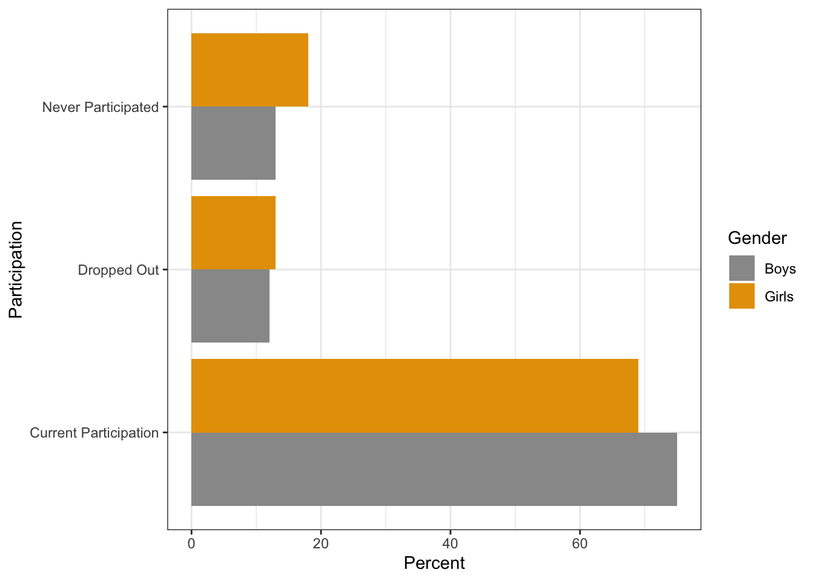
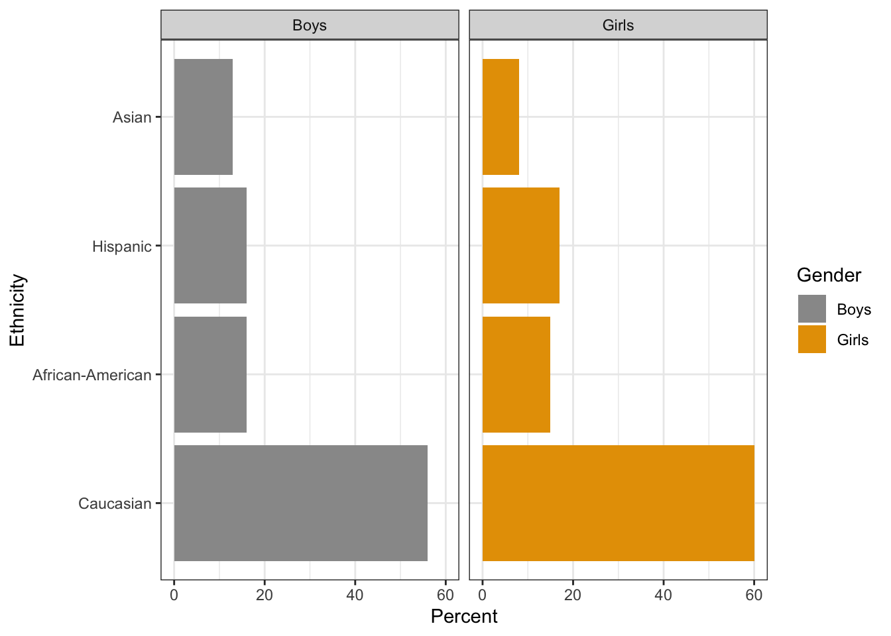
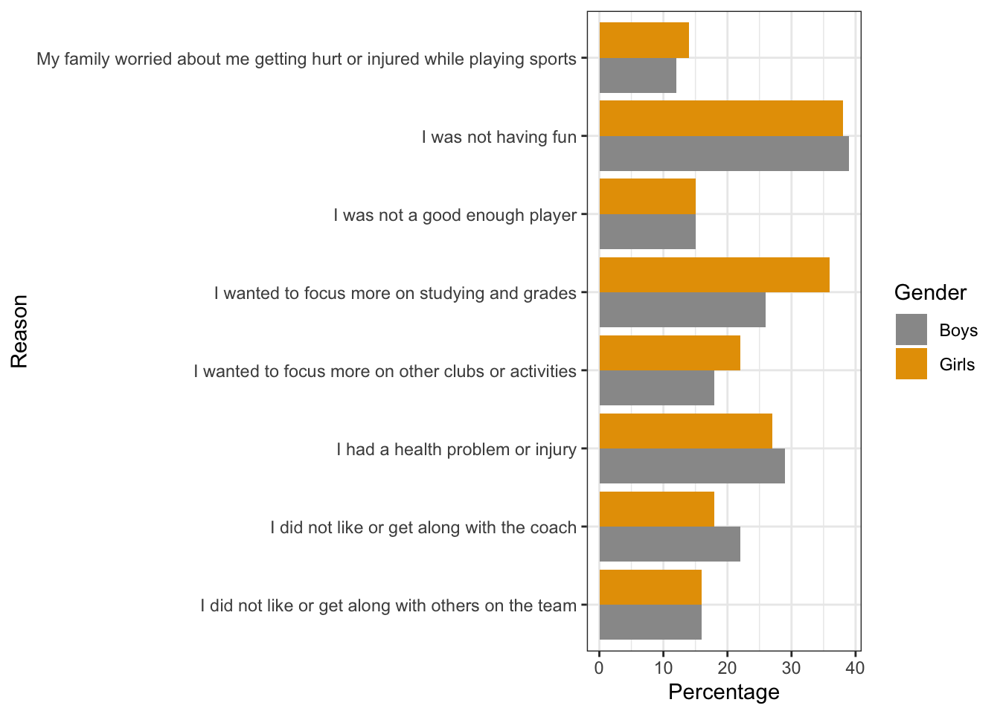

5 Middle and Late Childhood
5.1 Prelude to Middle and Late Childhood
Middle and late childhood spans the ages between early childhood and adolescence, approximately ages 6 to 11. Children gain greater control over the movement of their bodies, mastering many gross and fine motor skills that eluded the younger child. Changes in the brain during this age enable not only physical development but contributes to greater reasoning and flexibility of thought. School becomes a big part of middle and late childhood, and it expands their world beyond the boundaries of their own family. Peers start to take center-stage, often prompting changes in the parent-child relationship. Peer acceptance also influences children’s perception of self and may have consequences for emotional development beyond these years.
Learning Objectives: Physical Development in Middle and Late Childhood
Summarize the overall physical growth
Describe the changes in brain maturation
Describe the positive effects of sports
Describe reasons for a lack of participation in youth sports
Explain current trends regarding being overweight in childhood, the negative consequences of excess weight, the lack of recognition of being overweight, and interventions to normalize weight
5.1.1 Physical Development
Overall Physical Growth:
Rates of growth generally slow during these years. Typically, a child will gain about 5–7 pounds a year and grow about 2–3 inches per year (CDC, 2000). They also tend to slim down and gain muscle strength and lung capacity, making it possible to engage in strenuous physical activity for long periods of time. The beginning of the growth spurt, which occurs prior to puberty, begins two years earlier for females than males. The mean age for the beginning of the growth spurt for girls is nine, while for boys it is eleven. Children of this age tend to sharpen their abilities to perform both gross motor skills, such as riding a bike, and fine motor skills, such as cutting their fingernails. In gross motor skills (involving large muscles) boys typically outperform girls, while with fine motor skills (small muscles) girls outperform the boys. These improvements in motor skills are related to brain growth and experience during this developmental period.
Brain Growth:
Two major brain growth spurts occur during middle/late childhood (Spreen, Riser, & Edgell, 1995). Between ages 6 and 8, significant improvements in fine motor skills and eye-hand coordination are noted. Then between 10 and 12 years of age, the frontal lobes become more developed and improvements in logic, planning, and memory are evident (van der Molen & Molenaar, 1994). Myelination is one factor responsible for these growths. From age 6 to 12, the nerve cells in the association areas of the brain, that is those areas where sensory, motor, and intellectual functioning connect, become almost completely myelinated (Johnson, 2005). This myelination contributes to increases in information processing speed and the child’s reaction time. The hippocampus, responsible for transferring information from the short-term to long-term memory, also show increases in myelination resulting in improvements in memory functioning (Rolls, 2000). Children in middle to late childhood are also better able to plan, coordinate activity using both left and right hemispheres of the brain, and to control emotional outbursts. Paying attention is also improved as the prefrontal cortex matures (Markant & Thomas, 2013).
5.2 Sports

Middle childhood seems to be a great time to introduce children to organized sports, and in fact, many parents do. Nearly 3 million children play soccer in the United States (United States Youth Soccer, 2012). This activity promises to help children build social skills, improve athletically and learn a sense of competition. However, it has been suggested that the emphasis on competition and athletic skill can be counterproductive and lead children to grow tired of the game and want to quit. In many respects, it appears that children’s activities are no longer children’s activities once adults become involved and approach the games as adults rather than children. The U.S. Soccer Federation recently advised coaches to reduce the amount of drilling engaged in during practice and to allow children to play more freely and to choose their own positions. The hope is that this will build on their love of the game and foster their natural talents.
Sports are important for children. Children’s participation in sports has been linked to:
Higher levels of satisfaction with family and overall quality of life in children
Improved physical and emotional development
Better academic performance
Yet, a study on children’s sports in the United States (Sabo & Veliz, 2008) has found that gender, poverty, location, ethnicity, and disability can limit opportunities to engage in sports. Girls were more likely to have never participated in any type of sport (see Figure 5.2). They also found that fathers may not be providing their daughters as much support as they do their sons. While boys rated their fathers as their biggest mentor who taught them the most about sports, girls rated coaches and physical education teachers as their key mentors. Sabo and Veliz also found that children in suburban neighborhoods had a much higher participation of sports than boys and girls living in rural or urban centers. In addition, Caucasian girls and boys participated in organized sports at higher rates than minority children (see Figure 5.3).
Note. Total girls (n = 1051). Total boys (n = 1081).

Note. Girls – Caucasian (n = 425); African-American (n = 106); Hispanic (n = 124); Asian (n = 55). Boys – Caucasian (n = 435); African-American (n = 127); Hispanic (n = 123); Asian (n = 99).
Finally, Sabo and Veliz asked children who had dropped out of organized sports why they left. For both girls and boys, the number one answer was that it was no longer any fun (see Figure 5.4). According to the Sport Policy and Research Collaborative (SPARC) (2013), almost 1 in 3 children drop out of organized sports, and while there are many factors involved in the decisions to drop out, one suggestion has been the lack of training that coaches of children’s sports receive may be contributing to this attrition (Barnett et al., 1992). Several studies have found that when coaches receive proper training, the drop-out rate is about 5% instead of the usual 30% (FraserThomas et al., 2005; SPARC, 2013).

5.2.1 Welcome to the world of esports:
According to Discover Esports (2017), esports is a form of competition with the medium being video games. Players use computers or specific video game consoles to play video games against each other. In addition to playing themselves, children my just watch others play the video games. The recent SPARC (2016) report on the “State of Play” in the United States highlights a disturbing trend. One in four children between the ages of 5 and 16 rate playing computer games with their friends as a form of exercise. Over half of males and about 20% of females, aged 12–19, say they are fans of esports. Since 2008 there has also been a downward trend in the number of sports children are engaged in, despite a body of research evidence that suggests that specializing in only one activity can increase the chances of injury, while playing multiple sports is protective (SPARC, 2016). A University of Wisconsin study found that 49% of athletes who specialized in a sport experienced an injury compared with 23% of those who played multiple sports (McGuine, 2016).
5.2.2 Physical Education:
For many children, physical education in school is a key component in introducing children to sports. After years of schools cutting back on physical education programs, there has been a turnaround, prompted by concerns over childhood obesity and the related health issues. Despite these changes, currently only the state of Oregon and the District of Columbia meet PE guidelines of a minimum of 150 minutes per week of physical activity in elementary school and 225 minutes in middle school (SPARC, 2016).
5.3 Childhood Obesity
The decreased participation in school physical education and youth sports is just one of many factors that has led to an increase in children being overweight or obese. The current measurement for determining excess weight is the Body Mass Index (BMI), which expresses the relationship of height to weight. According to the Centers for Disease Control and Prevention (CDC), children whose BMI is at or above the 85th percentile for their age are considered overweight, while children who are at or above the 95th percentile are considered obese (Lu, 2016). In 2015–2016 approximately 13.9% of 2- to 5-year-olds and 18.4% of 6- to 11-year-olds were obese (Hales et al., 2017). Excess weight and obesity in children are associated with a variety of medical and cognitive conditions including high blood pressure, insulin resistance, inflammation, depression, and lower academic achievement (Lu, 2016).
Being overweight has also been linked to impaired brain functioning, which includes deficits in executive functioning, working memory, mental flexibility, and decision making (Liang et al., 2014). Children who ate more saturated fats performed worse on relational memory tasks, while eating a diet high in omega-3 fatty acids promoted relational memory skills (Davidson, 2014). Using animal studies Davidson et al. (2013) found that large amounts of processed sugars and saturated fat weakened the blood-brain barrier, especially in the hippocampus. This can make the brain more vulnerable to harmful substances that can impair its functioning. Another important executive functioning skill is controlling impulses and delaying gratification. Children who are overweight show less inhibitory control than normal weight children, which may make it more difficult for them to avoid unhealthy foods (Lu, 2016). Overall, being overweight as a child increases the risk for cognitive decline as one ages.

A growing concern is the lack of recognition from parents that children are overweight or obese. Katz (2015) referred to this as oblivobesity. Black et al. (2015) found that parents in the United Kingdom (UK) only recognized their children as obese when they were above the 99.7th percentile while the official cut-off for obesity is at the 85th percentile. Oude Luttikhuis, Stolk, and Sauer (2010) surveyed 439 parents and found that 75% of parents of overweight children said the child had a normal weight and 50% of parents of obese children said the child had a normal weight. For these parents, overweight was considered normal and obesity was considered normal or a little heavy. Doolen et al. (2009) reported on several studies from the United Kingdom, Australia, Italy, and the United States, and in all locations, parents were more likely to misperceive their children’s weight. Black et al. (2015) concluded that as the average weight of children rises, what parents consider normal also rises. Needless to say, if parents cannot identify if their children are overweight they will not be able to intervene and assist their children with proper weight management.
An added concern is that the children themselves are not accurately identifying if they are overweight. In a United States sample of 8- to 15-year-olds, more than 80% of overweight boys and 70% of overweight girls misperceived their weight as normal (Sarafrazi et al., 2014). Also noted was that as the socioeconomic status of the children rose, the frequency of these misconceptions decreased. It appeared that families with more resources were more conscious of what defines a healthy weight. Children who are overweight tend to be rejected, ridiculed, teased and bullied by others (http://Stopbullying.gov, 2018). This can certainly be damaging to their self-image and popularity. In addition, obese children run the risk of suffering orthopedic problems such as knee injuries, and they have an increased risk of heart disease and stroke in adulthood (Lu, 2016). It is hard for a child who is obese to become a non-obese adult. In addition, the number of cases of pediatric diabetes has risen dramatically in recent years.
Behavioral interventions, including training children to overcome impulsive behavior, are being researched to help overweight children (Lu, 2016). Practicing inhibition has been shown to strengthen the ability to resist unhealthy foods. Parents can help their overweight children the best when they are warm and supportive without using shame or guilt. Parents can also act like the child’s frontal lobe until it is developed by helping them make correct food choices and praising their efforts (Liang, et al., 2014). Research also shows that exercise, especially aerobic exercise, can help improve cognitive functioning in overweight children (Lu, 2016). Parents should take caution against emphasizing diet alone to avoid the development of any obsession about dieting that can lead to eating disorders. Instead, increasing a child’s activity level is most helpful.

In 2018 the American Psychological Association (APA) developed a clinical practice guideline that recommends family-based, multicomponent behavioral interventions to treat obesity and overweight in children 2 to 18 (Weir, 2019). The guidelines recommend counseling on diet, physical activity and “teaching parents strategies for goal setting, problem-solving, monitoring children’s behaviors, and modeling positive parental behaviors,” (p. 32). Early research results have shown success using this model compared to controls. Because there is no quick fix for weight loss, the program recommends 26 contact hours with the family. Unfortunately, for many families cost, location, and time commitment make it difficult for them to receive the interventions. APA has recommended that behavioral treatment could be delivered in primary care offices to encourage greater participation. APA also recommend that schools and communities need to offer more nutritious meals to children and limit sodas and unhealthy foods.
5.4 Cognitive Development in Middle and Late Childhood
Learning Objectives: Cognitive Development in Middle and Late Childhood
Describe Piaget’s concrete operational stage and the characteristics of concrete thought
Describe information processing research on memory, attention, knowledge base, metacognition, and critical thinking
Describe language development and explain the three types of communication disorders
Describe the theories of intelligence, including general “g”, triarchic theory, and Gardner’s multiple intelligences
Explain how intelligence is measured, the tests used to assess intelligence, the extremes in intelligence, and the concern of bias
Describe how language and culture influence the typical classroom
Identify common disabilities in childhood and the legislation that protects these children educationally
Recall from the last chapter that children in early childhood are in Piaget’s preoperational stage, and during this stage, children are learning to think symbolically about the world. Cognitive skills continue to expand in middle and late childhood as thought processes become more logical and organized when dealing with concrete information. Children at this age understand concepts such as past, present, and future, giving them the ability to plan and work toward goals. Additionally, they can process complex ideas such as addition and subtraction and cause-and-effect relationships.
5.4.1 Concrete Operational Thought
From ages 7 to 11, children are in what Piaget referred to as the concrete operational stage of cognitive development (Crain, 2005). This involves mastering the use of logic in concrete ways. The word concrete refers to that which is tangible; that which can be seen, touched, or experienced directly. The concrete operational child is able to make use of logical principles in solving problems involving the physical world. For example, the child can understand principles of cause and effect, size, and distance.
The child can use logic to solve problems tied to their own direct experience, but has trouble solving hypothetical problems or considering more abstract problems. The child uses inductive reasoning, which is a logical process in which multiple premises believed to be true are combined to obtain a specific conclusion. For example, a child has one friend who is rude, another friend who is also rude, and the same is true for a third friend. The child may conclude that friends are rude. We will see that this way of thinking tends to change during adolescence being replaced with deductive reasoning. We will now explore some of the major abilities that the concrete child exhibits.
Classification: As children’s experiences and vocabularies grow, they build schemata and are able to organize objects in many different ways. They also understand classification hierarchies and can arrange objects into a variety of classes and subclasses.

Identity: One feature of concrete operational thought is the understanding that objects have qualities that do not change even if the object is altered in some way. For instance, mass of an object does not change by rearranging it. A piece of chalk is still chalk even when the piece is broken in two.
Reversibility: The child learns that some things that have been changed can be returned to their original state. Water can be frozen and then thawed to become liquid again, but eggs cannot be unscrambled. Arithmetic operations are reversible as well: and . Many of these cognitive skills are incorporated into the school’s curriculum through mathematical problems and in worksheets about which situations are reversible or irreversible.
Conservation: Remember the example in our last chapter of preoperational children thinking that a tall beaker filled with 8 ounces of water was “more” than a short, wide bowl filled with 8 ounces of water? Concrete operational children can understand the concept of conservation, which means that changing one quality (in this example, height or water level) can be compensated for by changes in another quality (width). Consequently, there is the same amount of water in each container, although one is taller and narrower and the other is shorter and wider.
Decentration: Concrete operational children no longer focus on only one dimension of any object (such as the height of the glass) and instead consider the changes in other dimensions too (such as the width of the glass). This allows for conservation to occur.
Seriation: Arranging items along a quantitative dimension, such as length or weight, in a methodical way is now demonstrated by the concrete operational child. For example, they can methodically arrange a series of different-sized sticks in order by length, while younger children approach a similar task in a haphazard way.
These new cognitive skills increase the child’s understanding of the physical world, however according to Piaget, they still cannot think in abstract ways. Additionally, they do not think in systematic scientific ways. For example, when asked which variables influence the period that a pendulum takes to complete its arc and given weights they can attach to strings in order to do experiments, most children younger than 12 perform biased experiments from which no conclusions can be drawn (Inhelder & Piaget, 1958).
5.5 Information Processing
Children differ in their memory abilities, and these differences predict both their readiness for school and academic performance in school (PreBler et al., 2013). During middle and late childhood children make strides in several areas of cognitive function including the capacity of working memory, their ability to pay attention, and their use of memory strategies. Both changes in the brain and experience foster these abilities.
5.5.1 Working Memory:
The capacity of working memory expands during middle and late childhood, and research has suggested that both an increase in processing speed and the ability to inhibit irrelevant information from entering memory are contributing to the greater efficiency of working memory during this age (de Ribaupierre, 2002). Changes in myelination and synaptic pruning in the cortex are likely behind the increase in processing speed and ability to filter out irrelevant stimuli (Kail et al., 2013).
Children with learning disabilities in math and reading often have difficulties with working memory (Alloway, 2009). They may struggle with following the directions of an assignment. When a task calls for multiple steps, children with poor working memory may miss steps because they may lose track of where they are in the task. Adults working with such children may need to communicate: Using more familiar vocabulary, using shorter sentences, repeating task instructions more frequently, and breaking more complex tasks into smaller more manageable steps. Some studies have also shown that more intensive training of working memory strategies, such as chunking, aid in improving the capacity of working memory in children with poor working memory (Alloway et al., 2013).
5.5.2 Attention:
As noted above, the ability to inhibit irrelevant information improves during this age group, with there being a sharp improvement in selective attention from age six into adolescence (Vakil et al., 2009). Children also improve in their ability to shift their attention between tasks or different features of a task (Carlson et al., 2013). A younger child who is asked to sort objects into piles based on type of object, car versus animal, or color of object, red versus blue, may have difficulty if you switch from asking them to sort based on type to now having them sort based on color. This requires them to suppress the prior sorting rule. An older child has less difficulty making the switch, meaning there is greater flexibility in their attentional skills. These changes in attention and working memory contribute to children having more strategic approaches to challenging tasks.
5.5.3 Memory Strategies:
Bjorklund (2005) describes a developmental progression in the acquisition and use of memory strategies. Such strategies are often lacking in younger children but increase in frequency as children progress through elementary school. Examples of memory strategies include rehearsing information you wish to recall, visualizing and organizing information, creating rhymes as such “i before e except after c”, or inventing acronyms, such as “roygbiv” to remember the colors of the rainbow. Schneider et al. (2009) reported a steady increase in the use of memory strategies from ages six to ten in their longitudinal study (see Table 5.1).
| Age | Percentage |
|---|---|
| 6 | 55 |
| 7 | 44 |
| 8 | 25 |
| 9 | 17 |
| 10 | 13 |
Moreover, by age ten many children were using two or more memory strategies to help them recall information. Schneider and colleagues found that there were considerable individual differences at each age in the use of strategies, and that children who utilized more strategies had better memory performance than their same-aged peers.
Children may experience three deficiencies in their use of memory strategies. A mediation deficiency occurs when a child does not grasp the strategy being taught, and thus, does not benefit from its use. If you do not understand why using an acronym might be helpful, or how to create an acronym, the strategy is not likely to help you. In a production deficiency the child does not spontaneously use a memory strategy and must be prompted to do so. In this case, children know the strategy and are more than capable of using it, but they fail to “produce” the strategy on their own. For example, children might know how to make a list, but may fail to do this to help them remember what to bring on a family vacation. A utilization deficiency refers to children using an appropriate strategy, but it fails to aid their performance. Utilization deficiency is common in the early stages of learning a new memory strategy (Schneider & Pressley, 1997; Miller, 2000). Until the use of the strategy becomes automatic it may slow down the learning process, as space is taken up in memory by the strategy itself. Initially, children may get frustrated because their memory performance may seem worse when they try to use the new strategy. Once children become more adept at using the strategy, their memory performance will improve. Sodian and Schneider (1999) found that new memory strategies acquired prior to age eight often show utilization deficiencies with there being a gradual improvement in the child’s use of the strategy. In contrast, strategies acquired after this age often followed an “all-or-nothing” principle in which improvement was not gradual, but abrupt.
5.5.4 Knowledge Base:
During middle and late childhood, children are able to learn and remember due to an improvement in the ways they attend to and store information. As children enter school and learn more about the world, they develop more categories for concepts and learn more efficient strategies for storing and retrieving information. One significant reason is that they continue to have more experiences on which to tie new information. In other words, their knowledge base, knowledge in particular areas that makes learning new information easier, expands (Berger, 2014).
5.5.5 Metacognition:
Children in middle and late childhood also have a better understanding of how well they are performing a task, and the level of difficulty of a task. As they become more realistic about their abilities, they can adapt studying strategies to meet those needs. Young children spend as much time on an unimportant aspect of a problem as they do on the main point, while older children start to learn to prioritize and gauge what is significant and what is not. As a result, they develop metacognition. Metacognition refers to the knowledge we have about our own thinking and our ability to use this awareness to regulate our own cognitive processes (Bruning et al., 2004).
5.5.6 Critical Thinking:
According to Bruning et al. (2004) there is a debate in U.S. education as to whether schools should teach students what to think or how to think. Critical thinking, or a detailed examination of beliefs, courses of action, and evidence, involves teaching children how to think. The purpose of critical thinking is to evaluate information in ways that help us make informed decisions. Critical thinking involves better understanding a problem through gathering, evaluating, and selecting information, and also by considering many possible solutions. Ennis (1987) identified several skills useful in critical thinking. These include: Analyzing arguments, clarifying information, judging the credibility of a source, making value judgements, and deciding on an action. Metacognition is essential to critical thinking because it allows us to reflect on the information as we make decisions.
5.6 Language Development
5.6.1 Language Development
Vocabulary:
One of the reasons that children can classify objects in so many ways is that they have acquired a vocabulary to do so. By fifth grade, a child’s vocabulary has grown to 40,000 words. It grows at a rate that exceeds that of those in early childhood. This language explosion, however, differs from that of younger children because it is facilitated by being able to associate new words with those already known, and because it is accompanied by a more sophisticated understanding of the meanings of a word.
New Understanding:
Those in middle and late childhood are also able to think of objects in less literal ways. For example, if asked for the first word that comes to mind when one hears the word “pizza”, the younger child is likely to say “eat” or some word that describes what is done with a pizza. However, the older child is more likely to place pizza in the appropriate category and say “food”. This sophistication of vocabulary is also evidenced by the fact that older children tell jokes and delight in doing so. They may use jokes that involve plays on words such as “knock-knock” jokes or jokes with punch lines. Young children do not understand play on words and tell “jokes” that are literal or slapstick, such as “A man fell down in the mud! Isn’t that funny?”
Grammar and Flexibility:
Older children are also able to learn new rules of grammar with more flexibility. While younger children are likely to be reluctant to give up saying “I goed there”, older children will learn this rather quickly along with other rules of grammar.
5.6.2 Communication Disorders
At the end of early childhood, children are often assessed in terms of their ability to speak properly. By first grade, about 5% of children have a notable speech disorder (Medline Plus, 2016c).
Fluency disorders:
Fluency disorders affect the rate of speech. Speech may be labored and slow, or too fast for listeners to follow. The most common fluency disorder is stuttering. Stuttering is a speech disorder in which sounds, syllables, or words are repeated or last longer than normal. These problems cause a break in the flow of speech, which is called dysfluency (Medline Plus, 2016b). About 5% of young children, aged two to five, will develop some stuttering that may last from several weeks to several years (Medline Plus, 2016c). Approximately 75% of children recover from stuttering. For the remaining 25%, stuttering can persist as a lifelong communication disorder (National Institute on Deafness and other Communication Disorders, NIDCD, 2016). This is called developmental stuttering and is the most common form of stuttering. Brain injury, and in very rare instances, emotional trauma may be other triggers for developing problems with stuttering. In most cases of developmental stuttering, other family members share the same communication disorder. Researchers have recently identified variants in four genes that are more commonly found in those who stutter (NIDCD, 2016).
Articulation disorder:
An articulation disorder refers to the inability to correctly produce speech sounds (phonemes) because of imprecise placement, timing, pressure, speed, or flow of movement of the lips, tongue, or throat (NIDCD, 2016). Sounds can be substituted, left off, added or changed. These errors may make it hard for people to understand the speaker. They can range from problems with specific sounds, such as lisping to severe impairment in the phonological system. Most children have problems pronouncing words early on while their speech is developing. However, by age three, at least half of what a child says should be understood by a stranger. By age five, a child’s speech should be mostly intelligible. Parents should seek help if by age six the child is still having trouble producing certain sounds. It should be noted that accents are not articulation disorders (Medline Plus, 2016a).
Voice disorders:
Disorders of the voice involve problems with pitch, loudness, and quality of the voice (American Speech-Language and Hearing Association, 2016). It only becomes a disorder when problems with the voice makes the child unintelligible. In children, voice disorders are significantly more prevalent in males than in females. Between 1.4% and 6% of children experience problems with the quality of their voice. Causes can be due to structural abnormalities in the vocal cords and/or larynx, functional factors, such as vocal fatigue from overuse, and in rarer cases psychological factors, such as chronic stress and anxiety.
5.7 Theories of Intelligence
Psychologists have long debated how to best conceptualize and measure intelligence (Sternberg, 2003). These questions include: How many types of intelligence are there, the role of nature versus nurture in intelligence, how intelligence is represented in the brain, and the meaning of group differences in intelligence.
5.7.1 General (g) versus Specific (s) Intelligences:

From 1904-1905 the French psychologist Alfred Binet (1857-1914) and his colleague Théodore Simon (1872-1961) began working on behalf of the French government to develop a measure that would identify children who would not be successful with the regular school curriculum. The goal was to help teachers better educate these students (Aiken, 1994). Binet and Simon developed what most psychologists today regard as the first intelligence test, which consisted of a variety of questions that included the ability to name objects, define words, draw pictures, complete sentences, compare items, and construct sentences.
Binet and Simon (Binet, Simon, & Town, 1915; Siegler, 1992) believed that the questions they asked the children all assessed the basic abilities to understand, reason, and make judgments. It turned out that the correlations among these different types of measures were in fact all positive; that is, students who got one item correct were more likely to also get other items correct, even though the questions themselves were very different.
On the basis of these results, the psychologist Charles Spearman (1863-1945) hypothesized that there must be a single underlying construct that all of these items measure. He called the construct that the different abilities and skills measured on intelligence tests have in common the General Intelligence Factor (g). Virtually all psychologists now believe that there is a generalized intelligence factor, “g”, that relates to abstract thinking and that includes the abilities to acquire knowledge, to reason abstractly, to adapt to novel situations, and to benefit from instruction and experience (Gottfredson, 1997; Sternberg, 2003). People with higher general intelligence learn faster.
Soon after Binet and Simon introduced their test, the American psychologist Lewis Terman at Stanford University (1877-1956) developed an American version of Binet’s test that became known as the Stanford-Binet Intelligence Test. The Stanford-Binet is a measure of general intelligence made up of a wide variety of tasks, including vocabulary, memory for pictures, naming of familiar objects, repeating sentences, and following commands.
Although there is general agreement among psychologists that “g” exists, there is also evidence for specific intelligence (s), a measure of specific skills in narrow domains. One empirical result in support of the idea of “s” comes from intelligence tests themselves. Although the different types of questions do correlate with each other, some items correlate more highly with each other than do other items; they form clusters or clumps of intelligences.

5.7.2 Triarchic Theory:
One advocate of the idea of multiple intelligences is the psychologist Robert Sternberg. Sternberg has proposed a triarchic (three-part) theory of intelligence that proposes that people may display more or less analytical intelligence, creative intelligence, and practical intelligence. Sternberg (1985, 2003) argued that traditional intelligence tests assess analytical intelligence, which focuses on academic problem solving and performing calculations, but that they do not typically assess creative intelligence, the ability to adapt to new situations and create new ideas, and/or practical intelligence, the ability to demonstrate common sense and street-smarts.
As Sternberg proposed, research has found that creativity is not highly correlated with analytical intelligence (Furnham & Bachtiar, 2008) and exceptionally creative scientists, artists, mathematicians, and engineers do not score higher on intelligence than do their less creative peers (Simonton, 2000).
Furthermore, the brain areas that are associated with convergent thinking, or thinking that is directed toward finding the correct answer to a given problem, are different from those associated with divergent thinking, the ability to generate many different ideas or solutions to a single problem (Tarasova et al., 2010). On the other hand, being creative often takes some of the basic abilities measured by “g”, including the abilities to learn from experience, to remember information, and to think abstractly (Bink & Marsh, 2000). Ericsson (1998), Weisberg (2006), Hennessey and Amabile (2010) and Simonton (1992) studied creative people and identified at least five components that are likely to be important for creativity as listed in Table 5.2.
Note
How many uses can you think of for a paper clip?
📎
| Component | Description |
|---|---|
| Expertise | Creative people have studied and learned about a topic |
| Imaginative Thinking | Creative people view problems in new and different ways |
| Risk Taking | Creative people take on new, but potentially risky approaches |
| Intrinsic Interest | Creative people take on projects for interest, not money |
| Working in Creative Environments | The most creative people are supported, aided, and challenged by other people working on similar projects |
The last aspect of the triarchic model, practical intelligence, refers primarily to intelligence that cannot be gained from books or formal learning. Practical intelligence represents a type of “street smarts” or “common sense” that is learned from life experiences. Although a number of tests have been devised to measure practical intelligence (Sternberg et al., 1993; Wagner & Sternberg, 1985), research has not found much evidence that practical intelligence is distinct from “g” or that it is predictive of success at any particular tasks (Gottfredson, 2003). Practical intelligence may include, at least in part, certain abilities that help people perform well at specific jobs, and these abilities may not always be highly correlated with general intelligence (Sternberg et al., 1993).
5.7.3 Theory of Multiple Intelligences:
Another champion of the idea of specific types of intelligences rather than one overall intelligence is the psychologist Howard Gardner (1983, 1999). Gardner argued that it would be evolutionarily functional for different people to have different talents and skills and proposed that there are eight intelligences that can be differentiated from each other. A potential ninth intelligence (that is, existential) still needs empirical support. Gardner investigated intelligences by focusing on children who were talented in one or more areas and adults who suffered from strokes that compromised some capacities, but not others. Gardner also noted that some evidence for multiple intelligences comes from the abilities of autistic savants, people who score low on intelligence tests overall, but who nevertheless may have exceptional skills in a given domain, such as math, music, art, or in being able to recite statistics in a given sport (Treffert & Wallace, 2004). In addition to brain damage and the existence of savants, Gardner identified these 8 intelligences based on other criteria including a set developmental history and psychometric findings. See Table 5.3 for a list of Gardner’s eight specific intelligence.
| Intelligence | Description |
|---|---|
| Linguistic | The ability to speak and write well |
| Logical-mathematical | The ability to use logic and mathematical skills to solve problems |
| Spatial | The ability to think and reason about objects in three dimensions |
| Spatial | The ability to perform and enjoy music |
| Kinesthetic (body) | The ability to move the body in sports, dance, or other physical activities |
| Interpersonal | The ability to understand and interact effectively with others |
| Intrapersonal | The ability to have insight into the self |
| Naturalistic | The ability to recognize, identify, and understand animals, plants, and other living things |

The idea of multiple intelligences has been influential in the field of education, and teachers have used these ideas to try to teach differently to different students. For instance, to teach math problems to students who have particularly good kinesthetic intelligence, a teacher might encourage the students to move their bodies or hands according to the numbers. On the other hand, some have argued that these “intelligences” sometimes seem more like “abilities” or “talents” rather than real intelligence. There is no clear conclusion about how many intelligences there are. Are sense of humor, artistic skills, dramatic skills, and so forth also separate intelligences? Furthermore, and again demonstrating the underlying power of a single intelligence, the many different intelligences are, in fact, correlated and thus represent, in part, “g” (Brody, 2003).
5.8 Measuring Intelligence - Standardization and the Intelligence Quotient
The goal of most intelligence tests is to measure “g”, the general intelligence factor. Good intelligence tests are reliable, meaning that they are consistent over time, and also demonstrate validity, meaning that they actually measure intelligence rather than something else. Because intelligence is such an important individual difference dimension, psychologists have invested substantial effort in creating and improving measures of intelligence, and these tests are now considered the most accurate of all psychological tests. In fact, the ability to accurately assess intelligence is one of the most important contributions of psychology to everyday public life.
Intelligence changes with age. A 3-year-old who could accurately multiply 183 by 39 would certainly be intelligent, but a 25-year-old who could not do so would be seen as unintelligent. Thus, understanding intelligence requires that we know the norms or standards in a given population of people at a given age. The standardization of a test involves giving it to a large number of people at different ages and computing the average score on the test at each age level.
It is important that intelligence tests be standardized on a regular basis, because the overall level of intelligence in a population may change over time. The Flynn effect refers to the observation that scores on intelligence tests worldwide have increased substantially over the past decades (Flynn, 1999). Although the increase varies somewhat from country to country, the average increase is about 3 IQ points every 10 years. There are many explanations for the Flynn effect, including better nutrition, increased access to information, and more familiarity with multiple-choice tests (Neisser, 1998). Whether people are actually getting smarter, however, is debatable (Neisser, 1997). Most of the increase in IQ occurred during the second half of the 20th century. Recent research has found a reversal of the Flynn effect in several nations around the world, although some nations still show an increase in IQ scores (Dutton et al., 2016).
Once the standardization has been accomplished, we have a picture of the average abilities of people at different ages and can calculate a person’s mental age, which is the age at which a person is performing intellectually. If we compare the mental age of a person to the person’s chronological age, the result is the Intelligence Quotient (IQ), a measure of intelligence that is adjusted for age. A simple way to calculate IQ is by using the following formula:
\[ \text{IQ} = \text{mental age} \div \text{chronological age} \times 100. \nonumber \]
Thus a 10-year-old child who does as well as the average 10-year-old child has an IQ of 100 , whereas an 8-year-old child who does as well as the average 10-year-old child would have an IQ of 125 . Most modern intelligence tests are based on the relative position of a person’s score among people of the same age, rather than on the basis of this formula, but the idea of an intelligence “ratio” or “quotient” provides a good description of the score’s meaning.
5.8.1 Wechsler Scales:
A number of scales are based on the IQ. The Wechsler Adult lntelligence Scale (WAIS) is the most widely used intelligence test for adults (Watkins et al., 1995). The current version of the WAIS, the WAIS-IV, was standardized on 2,200 people ranging from 16 to 90 years of age. It consists of 15 different tasks, each designed to assess intelligence, including working memory, arithmetic ability, spatial ability, and general knowledge about the world. The WAIS-IV yield scores on four domains: verbal, perceptual, working memory, and processing speed. The reliability of the test is high (more than 0.95), and it shows substantial construct validity. The WAIS-IV is correlated highly with other IQ tests such as the Stanford-Binet, as well as with criteria of academic and life success, including college grades, measures of work performance, and occupational level. It also shows significant correlations with measures of everyday functioning among people with intellectual disabilities.
The Wechsler scale has also been adapted for preschool children in the form of the Wechsler Primary and Preschool Scale of Intelligence-Fourth Edition (WPPSI-IV) and for older children and adolescents in the form of the Wechsler Intelligence Scale for Children-Fifth Edition (WISC-V). Figure 5.11 illustrates an item from the WAIS.

5.8.2 Bias:
Intelligence tests and psychological definitions of intelligence have been heavily criticized since the 1970s for being biased in favor of Anglo-American, middle-class respondents and for being inadequate tools for measuring non-academic types of intelligence or talent. Intelligence changes with experience, and intelligence quotients or scores do not reflect that ability to change. What is considered smart varies culturally as well, and most intelligence tests do not take this variation into account. For example, in the West, being smart is associated with being quick. A person who answers a question the fastest is seen as the smartest, but in some cultures being smart is associated with considering an idea thoroughly before giving an answer. A well-thought-out, contemplative answer is the best answer.
5.8.3 Extremes of Intelligence: Intellectual Disability and Giftedness
The results of studies assessing the measurement of intelligence show that IQ is distributed in the population in the form of a normal distribution (or bell curve), which is the pattern of scores usually observed in a variable that clusters around its average. In a normal distribution, the bulk of the scores fall toward the middle, with fewer scores falling at the extremes. The normal distribution of intelligence shows that on IQ tests, as well as on most other measures, the majority of people cluster around the average (in this case, where IQ = 100), and fewer are either very smart or very dull (see Figure 5.12). Because the standard deviation of an IQ test is about 15, this means that about 2% of people score above an IQ of 130, often considered the threshold for giftedness, and about the same percentage score below an IQ of 70, often being considered the threshold for an intellectual disability.
Although Figure 5.12 presents a single distribution, the actual IQ distribution varies by sex such that the distribution for men is more spread out than is the distribution for women. These sex differences mean that about 20% more men than women fall in the extreme (very smart or very dull) ends of the distribution (Johnson et al., 2009). Boys are about five times more likely to be diagnosed with the reading disability dyslexia than are girls (Halpern, 1992), and are also more likely to be classified as having an intellectual disability. However, boys are also about 20% more highly represented in the upper end of the IQ distribution.

The normal distribution of IQ scores in the general population shows that most people have about average intelligence, while very few have extremely high or extremely low intelligence. One end of the distribution of intelligence scores is defined by people with very low IQ. Intellectual disability (or intellectual developmental disorder) is assessed based on cognitive capacity (IQ) and adaptive functioning. The severity of the disability is based on adaptive functioning, or how well the person handles everyday life tasks. About 1% of the United States population, most of them males, fulfill the criteria for intellectual developmental disorder, but some children who are given this diagnosis lose the classification as they get older and better learn to function in society. A particular vulnerability of people with low IQ is that they may be taken advantage of by others, and this is an important aspect of the definition of intellectual developmental disorder (Greenspan et al., 2001).
One cause of intellectual developmental disorder is Down syndrome, a chromosomal disorder caused by the presence of all or part of an extra 21st chromosome. The incidence of Down syndrome is estimated at approximately 1 per 700 births, and the prevalence increases as the mother’s age increases (CDC, 2014). People with Down syndrome typically exhibit a distinctive pattern of physical features, including a flat nose, upwardly slanted eyes, a protruding tongue, and a short neck (see Figure 5.13).

Fortunately, societal attitudes toward individuals with intellectual disabilities have changed over the past decades. Laws such as the Americans with Disabilities Act (ADA) have made it illegal to discriminate on the basis of mental and physical disability, and there has been a trend to bring people with intellectual disabilities out of institutions and into our workplaces and schools.
Giftedness refers to children who have an IQ of 130 or higher (Lally & Valentine-French, 2015). Having extremely high IQ is clearly less of a problem than having extremely low IQ, but there may also be challenges to being particularly smart. It is often assumed that schoolchildren who are labeled as “gifted” may have adjustment problems that make it more difficult for them to create social relationships. To study gifted children, Lewis Terman and his colleagues (Terman & Oden, 1959) selected about 1,500 high school students who scored in the top 1% on the Stanford-Binet and similar IQ tests (i.e., who had IQs of about 135 or higher), and tracked them for more than seven decades (the children became known as the “termites” and are still being studied today). This study found that these students were not unhealthy or poorly adjusted, but rather were above average in physical health and were taller and heavier than individuals in the general population. The students also had above average social relationships and were less likely to divorce than the average person (Seagoe, 1975).

Terman’s study also found that many of these students went on to achieve high levels of education and entered prestigious professions, including medicine, law, and science. Of the sample, 7% earned doctoral degrees, 4% earned medical degrees, and 6% earned law degrees. These numbers are all considerably higher than what would have been expected from a more general population. Another study of young adolescents who had even higher IQs found that these students ended up attending graduate school at a rate more than 50 times higher than that in the general population (Lubinski & Benbow, 2006).
As you might expect based on our discussion of intelligence, kids who are gifted have higher scores on general intelligence “g”, but there are also different types of giftedness. Some children are particularly good at math or science, some at automobile repair or carpentry, some at music or art, some at sports or leadership, and so on. There is a lively debate among scholars about whether it is appropriate or beneficial to label some children as “gifted and talented” in school and to provide them with accelerated special classes and other programs that are not available to everyone. Although doing so may help the gifted kids (Colangelo & Assouline, 2009), it also may isolate them from their peers and make such provisions unavailable to those who are not classified as “gifted.”
5.9 Education
Remember the ecological systems model (Bronfenbrenner, 1979) that we explored in chapter one? This model helps us understand an individual by examining the contexts in which the person lives and the direct and indirect influences on that person’s life. School becomes a very important component of children’s lives during middle and late childhood, and parents and the culture contribute to children’s experiences in school as indicated by the ecological systems model through their interaction with the school.
Gender:
The stereotypes held by parents and teachers can influence children’s self-efficacy in various domains. For example, teachers who hold the view that girls are better at reading (Retelsdorf et al., 2015) or boys are better at math (Plante et al., 2013) often find that their students’ performance in these areas mirror these stereotypes, despite the children’s actual ability, or the ability of children in the classrooms of teachers who do not hold such stereotypes. While not all children will internalize the views of others, those who do are more likely to show declines in their performance consistent with the stereotypes (Plante, et al., 2013; Retelsdorf et al., 2015).
Parental Involvement in School:
Parents vary in their level of involvement with their children’s schools. Teachers often complain that they have difficulty getting parents to participate in their child’s education and devise a variety of techniques to keep parents in touch with daily and overall progress. For example, parents may be required to sign a behavior chart each evening to be returned to school or may be given information about the school’s events through websites and newsletters. There are other factors that need to be considered when looking at parental involvement. To explore these, first ask yourself if all parents who enter the school with concerns about their child be received in the same way?
Horvat (2004) found that teachers seek a particular type of involvement from particular types of parents. While teachers thought they were open and neutral in their responses to parental involvement, in reality teachers were most receptive to support, praise and agreement coming from parents who were most similar in race and social class with the teachers. Parents who criticized the school or its policies were less likely to be given voice. Parents who have higher levels of income, occupational status, and other qualities favored in society have family capital. This is a form of power that can be used to improve a child’s education. Parents who do not have these qualities may find it more difficult to be effectively involved. The authors suggest that teachers closely examine their biases against parents. Schools may also need to examine their ability to dialogue with parents about school policies in more open ways. Any efforts to improve effective parental involvement should address these concerns.
5.9.1 Cultural Differences in the Classroom

Bilingualism:
In 2013, approximately 20% of school aged children and adolescents spoke a language other than English in the home (Camarota & Zeigler, 2014). The majority of bilingual students speak Spanish, but the rest represent more than three hundred different language groups from around the world. In larger communities throughout the United States, it is therefore common for a single classroom to contain students from several language backgrounds at once. In classrooms, as in other social settings, bilingualism exists in different forms and degrees. At one extreme are students who speak both English and another language fluently; at the other extreme are those who speak only limited versions of both languages. In between are students who speak their home (or heritage) language much better than English, as well as others who have partially lost their heritage language in the process of learning English (Tse, 2001). Commonly, a student may speak a language satisfactorily, but be challenged by reading or writing it. Whatever the case, each bilingual student poses unique challenges to teachers.
The student who speaks both languages fluently has a definite cognitive advantage. As you might suspect, and research confirms, a fully fluent bilingual student is in a better position to express concepts or ideas in more than one way, and to be aware of doing so (Jimenez et al., 1995; Francis, 2006). Unfortunately, the bilingualism of many students is unbalanced in the sense that they are either still learning English, or else they have lost some earlier ability to use their original, heritage language. Losing one’s original language is a concern as research finds that language loss limits students’ ability to learn English as well or as quickly as they could do. Having a large vocabulary in a first language has been shown to save time in learning vocabulary in a second language (Hansen et al., 2002). Preserving the first language is important if a student has impaired skill in all languages and therefore needs intervention or help from a speech-language specialist. Research has found, in such cases, that the specialist can be more effective if the specialist speaks and uses the first language as well as English (Kohnert et al., 2005).

Cultures and ethnic groups differ not only in languages, but also in how languages are used. Since some of the patterns differ from those typical of modern Western classrooms, they can create misunderstandings between teachers and students (Cazden, 2001; Rogers, et al., 2005). Consider these examples:
In some cultures, it is considered polite or even intelligent not to speak unless you have something truly important to say. Chitchat, or talk that simply affirms a personal tie between people, is considered immature or intrusive (Minami, 2002). In a classroom, this habit can make it easier for a child to learn not to interrupt others, but it can also make the child seem unfriendly.
Eye contact varies by culture. In many African-American and Latin American communities, it is considered appropriate and respectful for a child not to look directly at an adult who is speaking to them (Torres-Guzman, 1998). In classrooms, however, teachers often expect a lot of eye contact (as in “I want all eyes on me!”) and may be tempted to construe lack of eye contact as a sign of indifference or disrespect.
Social distance varies by culture. In some cultures, it is common to stand relatively close when having a conversation; in others, it is more customary to stand relatively far apart (Beaulieu, 2004). Problems may happen when a teacher and a student prefer different social distances. A student who expects a closer distance than does the teacher may seem overly familiar or intrusive, whereas one who expects a longer distance may seem overly formal or hesitant.
Wait time varies by culture. Wait time is the gap between the end of one person’s comment or question and the next person’s reply or answer. In some cultures wait time is relatively long, as long as three or four seconds (Tharp & Gallimore, 1989). In others it is a negative gap, meaning that it is acceptable, even expected, for a person to interrupt before the end of the previous comment. In classrooms the wait time is customarily about one second; after that, the teacher is likely to move on to another question or to another student. A student who habitually expects a wait time longer than one second may seem hesitant, and not be given many chances to speak. A student who expects a negative wait time, on the other hand, may seem overeager or even rude.
In most non-Anglo cultures, questions are intended to gain information, and it is assumed that a person asking the question truly does not have the information requested (Rogoff, 2003). In most classrooms, however, teachers regularly ask test questions, which are questions to which the teacher already knows the answer and that simply assess whether a student knows the answer as well (Macbeth, 2003). The question: “How much is 2+2?”, for example, is a test question. If the student is not aware of this purpose, he or she may become confused, or think that the teacher is surprisingly ignorant. Worse yet, the student may feel that the teacher is trying deliberately to shame the student by revealing the student’s ignorance or incompetence to others.
Preference for activities that are cooperative rather than competitive. Many activities in school are competitive, even when teachers try to de-emphasize the competition. Once past the first year or second year of school, students often become attentive to who receives the highest marks on an assignment, for example, or who is the best athlete at various sports or whose contributions to class discussions gets the most verbal recognition from the teacher (Johnson & Johnson, 1998). A teacher deliberately organizes important activities or assignments competitively, as in “Let’s see who finishes the math sheet first”. Classroom life can then become explicitly competitive, and the competitive atmosphere can interfere with cultivating supportive relationships among students or between students and the teacher (Cohen, 2004). For students who give priority to these relationships, competition can seem confusing at best and threatening at worst. A student may wonder, “What sort of sharing or helping with answers is allowed?” The answer to this question may be different depending on the cultural background of the student and teacher. What the student views as cooperative sharing may be seen by the teacher as laziness, freeloading, or even cheating.

What Happened to No Child Left Behind?
Children’s academic performance is often measured with the use of standardized tests. Achievement tests are used to measure what a child has already learned. Achievement tests are often used as measures of teaching effectiveness within a school setting and as a method to make schools that receive tax dollars (such as public schools, charter schools, and private schools that receive vouchers) accountable to the government for their performance. In 2001, President Bush signed into effect Public Law 107-110, better known as the No Child Left Behind Act, mandating that schools administer achievement tests to students and publish those results so that parents have an idea of their children’s performance. Additionally, the government would have information on the gaps in educational achievement between children from various social class, racial, and ethnic groups. Schools that showed significant gaps in these levels of performance were mandated to work toward narrowing these gaps. Educators criticized the policy for focusing too much on testing as the only indication of student performance. Target goals were considered unrealistic and set by the federal government rather than individual states. Because these requirements became increasingly unworkable for schools, changes to the law were requested. On December 12, 2015 President Obama signed into law the Every Student Succeeds Act (ESSA) (United States Department of Education, 2017). This law is state-driven and focuses on expanding educational opportunities and improving student outcomes, including in the areas of high school graduation, drop-out rates, and college attendance.
5.10 Children with Learning Disabilities
A Learning Disability (or LD) is a specific impairment of academic learning that interferes with a specific aspect of schoolwork and that reduces a student’s academic performance significantly. A LD shows itself as a major discrepancy between a student’s ability and some feature of achievement: The student may be delayed in reading, writing, listening, speaking, or doing mathematics, but not in all of these at once. A learning problem is not considered a learning disability if it stems from physical, sensory, or motor handicaps, or from generalized intellectual impairment. It is also not an LD if the learning problem really reflects the challenges of learning English as a second language. Genuine LDs are the learning problems left over after these other possibilities are accounted for or excluded. Typically, a student with an LD has not been helped by teachers’ ordinary efforts to assist the student when he or she falls behind academically, though what counts as an “ordinary effort”, of course, differs among teachers, schools, and students. Most importantly, though, an LD relates to a fairly specific area of academic learning. A student may be able to read and compute well enough, for example, but not be able to write. LDs are by far the most common form of special educational need, accounting for half of all students with special needs in the United States and approximately 20% of all students, depending on how the numbers are estimated (National Center for Learning Disabilities, 2017). Students with LDs are so common, in fact, that most teachers regularly encounter at least one per class in any given school year, regardless of the grade level they teach.
These difficulties are identified in school because this is when children’s academic abilities are being tested, compared, and measured. Consequently, once academic testing is no longer essential in that person’s life (as when they are working rather than going to school) these disabilities may no longer be noticed or relevant, depending on the person’s job and the extent of the disability.
Dyslexia is one of the most commonly diagnosed disabilities and involves having difficulty in the area of reading. This diagnosis is used for a number of reading difficulties. Common characteristics are difficulty with phonological processing, which includes the manipulation of sounds; spelling; and rapid visual/verbal processing. Additionally, the child may reverse letters, have difficulty reading from left to right, or may have problems associating letters with sounds. It appears to be rooted in neurological problems involving the parts of the brain active in recognizing letters, verbally responding, or being able to manipulate sounds. Recent studies have identified a number of genes that are linked to developing dyslexia (National Institute of Neurological Disorders and Stroke, 2016). Treatment typically involves altering teaching methods to accommodate the person’s particular problematic area.
Dysgraphia refers to a writing disability that is often associated with dyslexia (Carlson, 2013). There are different types of dysgraphia. For example, phonological dysgraphia involves the inability to sound out words and write them phonetically. Orthographic dysgraphia is demonstrated by those individuals who can spell regularly spelled words, but not irregularly spelled ones. Some individuals with dysgraphia experience difficulties in motor control and experience trouble forming letters when using a pen or pencil.

Dyscalculia refers to problems in math. Cowan and Powell (2014) identified several terms used when describing difficulties in mathematics. including dyscalculia, mathematical learning disability, and mathematics disorder. All three terms refer to students with average intelligence who exhibit poor academic performance in mathematics. When evaluating a group of third graders, Cowan and Powell (2014) found that children with dyscalculia demonstrated problems with working memory, reasoning, processing speed and oral language, all of which are referred to as domain-general factors. Additionally, problems with multi-digit skills, including number system knowledge, were also exhibited.
A child with attention-deficit/hyperactivity disorder (ADHD) shows a constant pattern of inattention and/or hyperactive and impulsive behavior that interferes with normal functioning (American Psychological Association, 2022). Some of the signs of inattention include great difficulty with, and avoidance of, tasks that require sustained attention (such as conversations or reading), failure to follow instructions (often resulting in failure to complete school work and other duties), disorganization (difficulty keeping things in order, poor time management, sloppy and messy work), lack of attention to detail, becoming easily distracted, and forgetfulness. Hyperactivity is characterized by excessive movement, and includes fidgeting or squirming, leaving one’s seat in situations when remaining seated is expected, having trouble sitting still (e.g., in a restaurant), running about and climbing on things, blurting out responses before another person’s question or statement has been completed, difficulty waiting one’s turn for something, and interrupting and intruding on others. Frequently, the hyperactive child comes across as noisy and boisterous. The child’s behavior is hasty, impulsive, and seems to occur without much forethought; these characteristics may explain why adolescents and young adults diagnosed with ADHD receive more traffic tickets and have more automobile accidents than do others their age (Thompson et al., 2007).

ADHD occurs worldwide in about 7% of children (APA, 2022). On the average, boys are 3 times more likely to have ADHD than are girls; however, such findings might reflect the greater propensity of boys to engage in aggressive and antisocial behavior and thus incur a greater likelihood of being referred to psychological clinics (Barkley, 2006). Children with ADHD face severe academic and social challenges. Compared to their non-ADHD counterparts, children with ADHD have lower grades and standardized test scores and higher rates of expulsion, grade retention, and dropping out (Loe & Feldman, 2007). They also are less well- liked and more often rejected by their peers (Hoza et al., 2005).
ADHD can persist into adolescence and adulthood (Barkley et al., 2002). A recent study found that 29.3% of adults who had been diagnosed with ADHD decades earlier still showed symptoms (Barbaresi et al., 2013). Somewhat troubling, this study also reported that nearly 81% of those whose ADHD persisted into adulthood had experienced at least one other comorbid disorder, compared to 47% of those whose ADHD did not persist. Additional concerns when an adult has ADHD include worse educational attainment, lower socioeconomic status, lower likelihood of being employed, greater likelihood of being divorced, and greater likelihood of having non-alcohol-related substance abuse problems (Klein et al., 2012).
Etiology of ADHD: Family and twin studies indicate that genetics play a significant role in the development of ADHD. Burt (2009), in a review of 26 studies, reported that the median rate of concordance for identical twins was .66, whereas the median concordance rate for fraternal twins was .20. The specific genes involved in ADHD are thought to include at least two that are important in the regulation of the neurotransmitter dopamine (Gizer et al., 2009), suggesting that dopamine may be important in ADHD. Indeed, medications used in the treatment of ADHD, such as methylphenidate (Ritalin) and amphetamine with dextroamphetamine (Adderall), have stimulant qualities and elevate dopamine activity. People with ADHD show less dopamine activity in key regions of the brain, especially those associated with motivation and reward (Volkow et al., 2009), which provides support to the theory that dopamine deficits may be a vital factor in the development this disorder (Swansonetal., 2007).
Brain imaging studies have shown that children with ADHD exhibit abnormalities in their frontal lobes, an area in which dopamine is in abundance. Compared to children without ADHD, those with ADHD appear to have smaller frontal lobe volume, and they show less frontal lobe activation when performing mental tasks (Banaschewski et al., 2017). Recall that one of the functions of the frontal lobes is to inhibit our behavior. Thus, abnormalities in this region may go a long way toward explaining the hyperactive, uncontrolled behavior of ADHD.
Many parents attribute their child’s hyperactivity to sugar. A statistical review of 16 studies, however, concluded that sugar consumption has no effect at all on the behavioral and cognitive performance of children (Wolraich et al., 1995). Additionally, although food additives have been shown to increase hyperactivity in non-ADHD children, the effect is rather small (McCann et al., 2007). Numerous studies, however, have shown a significant relationship between exposure to nicotine in cigarette smoke during the prenatal period and ADHD (Linnet et al., 2003; Sourander et al., 2019). Maternal smoking during pregnancy is also associated with the development of more severe symptoms of the disorder (Thakur et al., 2013). Additionally, low birth weight and prematurity have been correlated with ADHD (Banaschewski et al., 2017).
Treatment for ADHD: Recommended treatment for ADHD includes behavioral interventions, cognitive behavioral therapy, parent and teacher education, recreational programs, and lifestyle changes, such as getting more sleep (Clay, 2013). For some children medication is prescribed. Parents are often concerned that stimulant medication may result in their child acquiring a substance use disorder. However, research using longitudinal studies has demonstrated that children diagnosed with ADHD who received pharmacological treatment had a lower risk for substance abuse problems than those children who did not receive medication (Wilens et al., 2003). The risk of substance abuse problems appears to be even greater for those with ADHD who are un-medicated and also exhibit antisocial tendencies (Marshal & Molina, 2006).
Is the prevalence rate of ADHD increasing? Many people believe that the rates of ADHD have increased in recent years, and there is evidence to support this contention. In a recent study, investigators found that the parent-reported prevalence of ADHD among children (4–17 years old) in the United States increased by 22% during a 4-year period, from 7.8% in 2003 to 9.5% in 2007 (CDC, 2010). ADHD may be over-diagnosed by doctors who are too quick to medicate children as a behavior treatment. There is also greater awareness of ADHD now than in the past. Nearly everyone has heard of ADHD, and most parents and teachers are aware of its key symptoms. Thus, parents may be quick to take their children to a doctor if they believe their child possesses these symptoms, or teachers may be more likely now than in the past to notice the symptoms and refer the child for evaluation. Further, the use of computers, video games, iPhones, and other electronic devices has become pervasive among children in the early 21st century, and these devices could potentially shorten children’s attentions spans. Thus, what might seem like inattention to some parents and teachers could simply reflect exposure to too much technology.
5.10.1 Legislation
Since the 1970s, political and social attitudes have moved increasingly toward including people with disabilities into a wide variety of “regular” activities. In the United States, the shift is illustrated clearly in the federal legislation that was enacted during this time. Three major laws were passed that guaranteed the rights of persons with disabilities, and of children and students with disabilities in particular. The third law has had the biggest impact on education.
Rehabilitation Act of 1973, Section 504: This law, the first of its kind, required that individuals with disabilities be accommodated in any program or activity that receives federal funding (PL 93-112, 1973). Although this law was not intended specifically for education, in practice it has protected students’ rights in some extracurricular activities (for older students) and in some child care or after-school care programs (for younger students). If those programs receive federal funding of any kind, the programs are not allowed to exclude children or youths with disabilities, and they have to find reasonable ways to accommodate the individuals’ disabilities.
Americans with Disabilities Act of 1990 (or ADA): This legislation also prohibited discrimination on the basis of disability, just as Section 504 of the Rehabilitation Act had done (PL 101-336, 1990). Although the ADA also applies to all people (not just to students), its provisions are more specific and “stronger” than those of Section 504. In particular, ADA extends to all employment and jobs, not just those receiving federal funding. It also specifically requires accommodations to be made in public facilities such as buses, restrooms, and telephones. ADA legislation is therefore responsible for some of the “minor” renovations in schools that you may have noticed in recent years, like wheelchair-accessible doors, ramps, and restrooms, and public telephones with volume controls.
Individuals with Disabilities Education Act (or IDEA): As its name implied, this legislation was more focused on education than either Section 504 or ADA. It was first passed in 1975, reauthorized in 2004 (PL 108-446, 2004), and most recently amended in 2015 through Public Law 114-95, as the Every Student Succeeds Act (United States Department of Education, 2017). In its current form, the law guarantees the following rights related to education for anyone with a disability from birth to age 21. The first two influence schooling in general, but the last three affect the work of classroom teachers rather directly:
Free, appropriate education: An individual or an individual’s family should not have to pay for education simply because the individual has a disability, and the educational program should be truly educational; i.e., not merely care-taking or babysitting the person.
Due process: In case of disagreements between an individual with a disability and the schools or other professionals, there must be procedures for resolving the disagreements that are fair and accessible to all parties, including the person himself or herself or the person’s representative.
Fair evaluation of performance in spite of disability: Tests or other evaluations should not assume test taking skills that a person with a disability cannot reasonably be expected to have, such as holding a pencil, hearing or seeing questions, working quickly, or understanding and speaking orally. Evaluation procedures should be modified to allow for these differences. This provision of the law applies both to evaluations made by teachers and to school-wide or “high-stakes” testing programs.
Education in the “least restrictive environment”: Education for someone with a disability should provide as many educational opportunities and options for the person as possible, both in the short term and in the long term. In practice this requirement has meant including students in regular classrooms and school activities as much as possible, though often not totally.
An individualized educational program (IEP): Given that every disability is unique, instructional planning for a person with a disability should be unique or individualized as well. In practice this provision has led to classroom teachers planning individualized programs jointly with other professionals (like reading specialists, psychologists, or medical personnel) as part of a team.
Evaluation and diagnosis can be the first step in helping provide children with disabilities the type of instruction and resources that will benefit them educationally, but diagnosis and labeling also have social implications. It is important to consider that children can be misdiagnosed and that once a child has received a diagnostic label, the child, teachers, and family members may tend to interpret actions of the child through that label. The label can also influence the child’s self-concept. Consider, for example, a child who is misdiagnosed as learning-disabled. That child may expect to have difficulties in school, lack confidence, and because of these expectations experience trouble. This becomes a self-fulfilling prophecy or tendency to act in such a way as to make what you predict will happen actually come true.
This calls our attention to the power that labels can have whether or not they are accurately applied. It is also important to consider that children’s difficulties can change over time; a child who has problems in school, may improve later or may live under circumstances as an adult where the problem (such as a delay in math skills or reading skills) is no longer relevant. That person, however, will still have a label as learning disabled. It should be recognized that the distinction between abnormal and normal behavior is not always clear; some abnormal behavior in children is fairly common.
5.11 Socioemotional Development in Middle and Late Childhood
Learning Objectives: Socioemotional Development in Middle and Late Childhood
Describe Erikson’s fourth stage of industry vs. inferiority
Describe the changes in self-concept, self-esteem, and self-efficacy
Explain Kohlberg’s stages of moral development
Describe the importance of peers, the stages of friendships, peer acceptance, and the consequences of peer acceptance
Describe bullying, cyberbullying and the consequences of bullying
Identify the types of families where children reside
Identify the five family tasks
Explain the consequences of divorce on children
Describe the effects of cohabitation and remarriage on children
Describe the characteristics and developmental stages of blended families
5.11.1 Erikson: Industry vs. Inferiority
According to Erikson, children in middle and late childhood are very busy or industrious (Erikson, 1982). They are constantly doing, planning, playing, getting together with friends, and achieving. This is a very active time, and a time when they are gaining a sense of how they measure up when compared with peers. Erikson believed that if these industrious children can be successful in their endeavors, they will get a sense of confidence for future challenges. If not, a sense of inferiority can be particularly haunting during middle and late childhood.
5.11.2 Self-Understanding
Self-concept refers to beliefs about general personal identity (Seiffert, 2011). These beliefs include personal attributes, such as one’s age, physical characteristics, behaviors, and competencies. Children in middle and late childhood have a more realistic sense of self than do those in early childhood, and they better understand their strengths and weaknesses. This can be attributed to greater experience in comparing their own performance with that of others, and to greater cognitive flexibility. Children in middle and late childhood are also able to include other peoples’ appraisals of them into their self-concept, including parents, teachers, peers, culture, and media. Internalizing others’ appraisals and creating social comparison affect children’s self-esteem, which is defined as an evaluation of one’s identity. Children can have individual assessments of how well they perform a variety of activities and also develop an overall global self-assessment. If there is a discrepancy between how children view themselves and what they consider to be their ideal selves, their self-esteem can be negatively affected.
Another important development in self-understanding is self-efficacy, which is the belief that you are capable of carrying out a specific task or of reaching a specific goal (Bandura, 1977, 1986, 1997). Large discrepancies between self-efficacy and ability can create motivational problems for the individual (Seifert, 2011). If a student believes that he or she can solve mathematical problems, then the student is more likely to attempt the mathematics homework that the teacher assigns. Unfortunately, the converse is also true. If a student believes that he or she is incapable of math, then the student is less likely to attempt the math homework regardless of the student’s actual ability in math. Since self-efficacy is self-constructed, it is possible for students to miscalculate or misperceive their true skill, and these misperceptions can have complex effects on students’ motivations. It is possible to have either too much or too little self-efficacy, and according to Bandura (1997) the optimum level seems to be either at, or slightly above, true ability.
5.11.3 Kohlberg’s Stages of Moral Development**
Kohlberg (1963) built on the work of Piaget and was interested in finding out how our moral reasoning changes as we get older. He wanted to find out how people decide what is right and what is wrong. Just as Piaget believed that children’s cognitive development follows specific patterns, Kohlberg (1984) argued that we learn our moral values through active thinking and reasoning, and that moral development follows a series of stages. Kohlberg’s six stages are generally organized into three levels of moral reasons. To study moral development, Kohlberg posed moral dilemmas to children, teenagers, and adults, such as the following:
A man’s wife is dying of cancer and there is only one drug that can save her. The only place to get the drug is at the store of a pharmacist who is known to overcharge people for drugs. The man can only pay $1,000, but the pharmacist wants $2,000, and refuses to sell it to him for less, or to let him pay later. Desperate, the man later breaks into the pharmacy and steals the medicine. Should he have done that? Was it right or wrong? Why? (Kohlberg, 1984)
Level One — Preconventional Morality:
In stage one, moral reasoning is based on concepts of punishment. The child believes that if the consequence for an action is punishment, then the action was wrong. In the second stage, the child bases his or her thinking on self-interest and reward. “You scratch my back, I’ll scratch yours.” The youngest subjects seemed to answer based on what would happen to the man as a result of the act. For example, they might say the man should not break into the pharmacy because the pharmacist might find him and beat him. Or they might say that the man should break in and steal the drug and his wife will give him a big kiss. Right or wrong, both decisions were based on what would physically happen to the man as a result of the act. This is a self-centered approach to moral decision-making. He called this most superficial understanding of right and wrong preconventional morality. Preconventional morality focuses on self-interest. Punishment is avoided, and rewards are sought. Adults can also fall into these stages, particularly when they are under pressure.
Level Two — Conventional Morality:
Those tested who based their answers on what other people would think of the man as a result of his act were placed in Level Two. For instance, they might say he should break into the store, and then everyone would think he was a good husband, or he should not because it is against the law. In either case, right and wrong is determined by what other people think. In stage three, the person wants to please others. At stage four, the person acknowledges the importance of social norms or laws and wants to be a good member of the group or society. A good decision is one that gains the approval of others or one that complies with the law. This he called conventional morality, in which people care about the effect of their actions on others. Some older children, adolescents, and adults use this reasoning.
Level Three — Postconventional Morality:
Right and wrong are based on social contracts established for the good of everyone and that can transcend the self and social convention. For example, the man should break into the store because, even if it is against the law, the wife needs the drug and her life is more important than the consequences the man might face for breaking the law. Alternatively, the man should not violate the principle of the right of property because this rule is essential for social order. In either case, the person’s judgment goes beyond what happens to the self. It is based on a concern for others; for society as a whole, or for an ethical standard rather than a legal standard. This level is called postconventional moral development because it goes beyond convention or what other people think to a higher, universal ethical principle of conduct that may or may not be reflected in the law. Notice that such thinking is the kind Supreme Court justices do all day when deliberating whether a law is moral or ethical, which requires being able to think abstractly. Often this is not accomplished until a person reaches adolescence or adulthood. In the fifth stage, laws are recognized as social contracts. The reasons for the laws, like justice, equality, and dignity, are used to evaluate decisions and interpret laws. In the sixth stage, individually determined universal ethical principles are weighed to make moral decisions. Kohlberg said that few people ever reach this stage. The six stages can be reviewed in Table 5.4.
Although research has supported Kohlberg’s idea that moral reasoning changes from an early emphasis on punishment and social rules and regulations to an emphasis on more general ethical principles, as with Piaget’s approach, Kohlberg’s stage model is probably too simple. For one, people may use higher levels of reasoning for some types of problems but revert to lower levels in situations where doing so is more consistent with their goals or beliefs (Rest, 1979). Second, it has been argued that the stage model is particularly appropriate for Western, rather than non-Western, samples in which allegiance to social norms, such as respect for authority, may be particularly important (Haidt, 2001). In addition, there is frequently little correlation between how we score on the moral stages and how we behave in real life.
| Age | Moral Level | Description |
|---|---|---|
| Young children — usually prior to age 9 | Preconventional morality | Stage 1: Focus is on self-interest and punishment is avoided. The man shouldn’t steal the drug, as he may get caught and go to jail. Stage 2: Rewards are sought. A person at this level will argue that the man should steal the drug because he does not want to lose his wife who takes care of him. |
| Older children, adolescents, and most adults | Conventional morality | Stage 3: Focus is on how situational outcomes impact others and wanting to please and be accepted. The man should steal the drug because that is what good husbands do. Stage 4: People make decisions based on laws or formalized rules. The man should obey the law because stealing is a crime. |
| Rare with adolescents and few adults | Postconventional morality | Stage 5: Individuals employ abstract reasoning to justify behaviors. The man should steal the drug because laws can be unjust, and you have to consider the whole situation. Stage 6: Moral behavior is based on self-chosen ethical principles. The man should steal the drug because life is more important than property. |
Perhaps the most important critique of Kohlberg’s theory is that it may describe the moral development of males better than it describes that of females. Gilligan (1982) has argued that, because of differences in their socialization, males tend to value principles of justice and rights, whereas females value caring for and helping others. Although there is little evidence for a gender difference in Kohlberg’s stages of moral development (Turiel, 1998), it is true that girls and women tend to focus more on issues of caring, helping, and connecting with others than do boys and men (Jaffee & Hyde, 2000).
5.12 Friends and Peers
As toddlers, children may begin to show a preference for certain playmates (Ross & Lollis, 1989). However, peer interactions at this age often involve more parallel play rather than intentional social interactions (Pettit et al., 1996). By age four, many children use the word “friend” when referring to certain children and do so with a fair degree of stability (Hartup, 1983). However, among young children “friendship” is often based on proximity, such as applying the word to children who live next door or attend the same school, or it refers to whomever they just happen to be playing with at the time (Rubin, 1980).

Friendships take on new importance as judges of one’s worth, competence, and attractiveness in middle and late childhood. Friendships provide the opportunity for learning social skills, such as how to communicate with others and how to negotiate differences. Children get ideas from one another about how to perform certain tasks, how to gain popularity, what to wear or say, and how to act. This society of children marks a transition from a life focused on the family to a life concerned with peers. During middle and late childhood, peers increasingly play an important role. For example, peers play a key role in a child’s self-esteem at this age as any parent, who has tried to console a rejected child will tell you. No matter how complimentary and encouraging the parent may be, being rejected by friends can only be remedied by renewed acceptance. Children’s conceptualization of what makes someone a “friend” changes from a more egocentric understanding to one based on mutual trust and commitment. Both Bigelow (1977) and Selman (1980) believe that these changes are linked to advances in cognitive development.
Bigelow and La Gaipa (1975) outline three stages to children’s conceptualization of friendship. In stage one, reward-cost, friendship focuses on mutual activities. Children in early, middle, and late childhood all emphasize similar interests as the main characteristics of a good friend. Stage two, normative expectation, focuses on conventional morality; that is, the emphasis is on a friend as someone who is kind and shares with you. Clark and Bittle (1992) found that fifth graders emphasized this in a friend more than third or eighth graders. In the final stage, empathy and understanding, friends are people who are loyal, committed to the relationship, and share intimate information. Clark and Bittle (1992) reported eighth graders emphasized this more in a friend. They also found that as early as fifth grade, girls were starting to include a sharing of secrets, and not betraying confidences as crucial to someone who is a friend.
Selman (1980) outlines five stages of friendship from early childhood through to adulthood:
Momentary physical interaction: a friend is someone who you are playing with at this point in time. Selman notes that this is typical of children between the ages of three and six. These early friendships are based more on circumstances (e.g., a neighbor) than on genuine similarities.
One-way assistance: a friend is someone who does nice things for you, such as saving you a seat on the school bus or sharing a toy. However, children in this stage do not always think about what they are contributing to the relationships. Nonetheless, having a friend is important and children will sometimes put up with a not so nice friend, just to have a friend. Children as young as five and as old as nine may be in this stage.
Fair-weather cooperation: children are very concerned with fairness and reciprocity, and thus, a friend is someone returns a favor. In this stage, if a child does something nice for a friend there is an expectation that the friend will do something nice for them at the first available opportunity. When this fails to happen, a child may break off the friendship. Selman found that some children as young as seven and as old as twelve are in this stage.
Intimate and mutual sharing: typically between the ages of eight and fifteen, a friend is someone who you can tell them things you would tell no one else. Children and teens in this stage no longer “keep score” and do things for a friend because they genuinely care for the person. If a friendship dissolves in the stage it is usually due to a violation of trust. However, children in this stage do expect their friend to share similar interests and viewpoints and may take it as a betrayal if a friend likes someone that they do not.
Autonomous interdependence: a friend is someone who accepts you and that you accept as they are. In this stage children, teens, and adults accept and even appreciate differences between themselves and their friends. They are also not as possessive, so they are less likely to feel threatened if their friends have other relationships or interests. Children are typically twelve or older in this stage.
5.12.1 Peer Relationships:
Sociometric assessment measures attraction between members of a group, such as a classroom of students. In sociometric research children are asked to mention the three children they like to play with the most, and those they do not like to play with. The number of times a child is nominated for each of the two categories (like, do not like) is tabulated. Popular children receive many votes in the “like” category, and very few in the “do not like” category. In contrast, rejected children receive more unfavorable votes, and few favorable ones. Controversial children are mentioned frequently in each category, with several children liking them and several children placing them in the do not like category. Neglected children are rarely mentioned in either category, and the average child has a few positive votes with very few negative ones (Asher & Hymel, 1981).
Most children want to be liked and accepted by their friends. Some popular children are nice and have good social skills. These popular-prosocial children tend to do well in school and are cooperative and friendly. Popular-antisocial children may gain popularity by acting tough or spreading rumors about others (Cillessen & Mayeux, 2004). Rejected children are sometimes excluded because they are rejected-withdrawn. These children are shy and withdrawn and are easy targets for bullies because they are unlikely to retaliate when belittled (Boulton, 1999). Other rejected children are rejected-aggressive and are ostracized because they are aggressive, loud, and confrontational. The aggressive-rejected children may be acting out of a feeling of insecurity. Unfortunately, their fear of rejection only leads to behavior that brings further rejection from other children. Children who are not accepted are more likely to experience conflict, lack confidence, and have trouble adjusting (Klima & Repetti, 2008; Schwartz et al., 2014).

Long-Term Consequences of Popularity:
Childhood popularity researcher Mitch Prinstein has found that likability in childhood leads to positive outcomes throughout one’s life (as cited in Reid, 2017). Adults who were accepted in childhood have stronger marriages and work relationships, earn more money, and have better health outcomes than those who were unpopular. Further, those who were unpopular as children, experienced greater anxiety, depression, substance use, obesity, physical health problems and suicide. Prinstein found that a significant consequence of unpopularity was that children were denied opportunities to build their social skills and negotiate complex interactions, thus contributing to their continued unpopularity. Further, biological effects can occur due to unpopularity, as social rejection can activate genes that lead to an inflammatory response.
5.12.2 Bullying
According to Stopbullying.gov (2016), a federal government website managed by the U.S. Department of Health & Human Services, bullying is defined as unwanted, aggressive behavior among school aged children that involves a real or perceived power imbalance. Further, the aggressive behavior happens more than once or has the potential to be repeated. There are different types of bullying, including verbal bullying, which is saying or writing mean things, teasing, name calling, taunting, threatening, or making inappropriate sexual comments. Social bullying, also referred to as relational bullying, involves spreading rumors, purposefully excluding someone from a group, or embarrassing someone on purpose. Physical Bullying involves hurting a person’s body or possessions.
A more recent form of bullying is cyberbullying, which involves electronic technology. Examples of cyberbullying include sending mean text messages or emails, creating fake profiles, and posting embarrassing pictures, videos or rumors on social networking sites. Children who experience cyberbullying have a harder time getting away from the behavior because it can occur any time of day and without being in the presence of others. Additional concerns of cyberbullying include that messages and images can be posted anonymously, distributed quickly, and be difficult to trace or delete. Children who are cyberbullied are more likely to: experience in-person bullying, be unwilling to attend school, receive poor grades, use alcohol and drugs, skip school, have lower self-esteem, and have more health problems (Stopbullying.gov, 2016). The National Center for Education Statistics and Bureau of Justice statistics indicate that in 2010-2011, 28% of students in grades 6–12 experienced bullying and 7% experienced cyberbullying. The 2013 Youth Risk Behavior Surveillance System, which monitors six types of health risk behaviors, indicate that 20\% of students in grades 9–12 experienced bullying and 15% experienced cyberbullying (Stopbullying.gov, 2016).
Those at risk for bullying:
Bullying can happen to anyone, but some students are at an increased risk for being bullied including lesbian, gay, bisexual, transgender (LGBT) youth, those with disabilities, and those who are socially isolated. Additionally, those who are perceived as different, weak, less popular, overweight, or having low self-esteem, have a higher likelihood of being bullied.

Those who are more likely to bully:
Bullies are often thought of as having low self-esteem, and then bully others to feel better about themselves. Although this can occur, many bullies in fact have high levels of self-esteem. They possess considerable popularity and social power and have well-connected peer relationships. They do not lack self-esteem, and instead lack empathy for others. They like to dominate or be in charge of others.
Bullied children often do not ask for help:
Unfortunately, most children do not let adults know that they are being bullied. Some fear retaliation from the bully, while others are too embarrassed to ask for help. Those who are socially isolated may not know who to ask for help or believe that no one would care or assist them if they did ask for assistance. Consequently, it is important for parents and teacher to know the warning signs that may indicate a child is being bullied. These include unexplainable injuries, lost or destroyed possessions, changes in eating or sleeping patterns, declining school grades, not wanting to go to school, loss of friends, decreased self-esteem and/or self-destructive behaviors.
5.13 Family Life
5.13.1 Family Tasks:
One of the ways to assess the quality of family life is to consider the tasks of families. Berger (2014) lists five family functions:
Providing food, clothing and shelter
Encouraging learning
Developing self-esteem
Nurturing friendships with peers
Providing harmony and stability
Notice that in addition to providing food, shelter, and clothing, families are responsible for helping the child learn, relate to others, and have a confident sense of self. Hopefully, the family will provide a harmonious and stable environment for living. A good home environment is one in which the child’s physical, cognitive, emotional, and social needs are adequately met. Sometimes families emphasize physical needs but ignore cognitive or emotional needs. Other times, families pay close attention to physical needs and academic requirements but may fail to nurture the child’s friendships with peers or guide the child toward developing healthy relationships. Parents might want to consider how it feels to live in the household as a child. The tasks of families listed above are functions that can be fulfilled in a variety of family types-not just intact, two-parent households.
5.13.2 Parenting Styles:
As discussed in the previous chapter, parenting styles affect the relationship parents have with their children. During middle and late childhood, children spend less time with parents and more time with peers, and consequently parents may have to modify their approach to parenting to accommodate the child’s growing independence. The authoritative style, which incorporates reason and engaging in joint decision-making whenever possible, may be the most effective approach (Berk, 2007). However, Asian-American, African-American, and Mexican-American parents are more likely than European-Americans to use an authoritarian style of parenting. This authoritarian style of parenting that uses strict discipline and focuses on obedience is also tempered with acceptance and warmth on the part of the parents. Children raised in this manner tend to be confident, successful and happy (Chao, 2001; Stewart & Bond, 2002).
5.13.3 Living Arrangements:
Certainly, the living arrangements of children have changed significantly over the years. In 1960, 92% of children resided with married parents, while only 5% had parents who were divorced or separated and 1% resided with parents who had never been married. By 2008, 70% of children resided with married parents, 15% had parent who were divorced or separated, and 14% resided with parents who had never married (Pew Research Center, 2010). In 2017, only 65% of children lived with two married parents, while 32% (24 million children younger than 18) lived with an unmarried parent (Livingston, 2018). Some 3% of children were not living with any parents, according to the U.S. Census Bureau data.
Most children in unmarried parent households in 2017 were living with a solo mother (21%), but a growing share were living with cohabiting parents (7%) or a solo father (4%) (see Figure 5.24). The increase in children living with solo or cohabiting parents was thought to be due to the overall declines in marriage, as well as increases in divorce. Of concern is that living with only one parent was associated with a household’s lower economic situation. Specifically, 30% of solo mothers, 17% of solo fathers, and 16% of families with a cohabiting couple lived in poverty. In contrast, only 8% of married couples lived below the poverty line (Livingston, 2018).

5.13.4 Lesbian and Gay Parenting
Research has consistently shown that the children of lesbian and gay parents are as successful as those of heterosexual parents, and consequently efforts are being made to ensure that gay and lesbian couples are provided with the same legal rights as heterosexual couples when adopting children (American Civil Liberties Union, 2016).
Patterson (2013) reviewed more than 25 years of social science research on the development of children raised by lesbian and gay parents and found no evidence of detrimental effects. In fact, research has demonstrated that children of lesbian and gay parents are as well-adjusted overall as those of heterosexual parents. Specifically, research comparing children based on parental sexual orientation has not shown any differences in the development of gender identity, gender role development, or sexual orientation. Additionally, there were no differences between the children of lesbian or gay parents and those of heterosexual parents in separation-individuation, behavior problems, self-concept, locus of control, moral judgment, school adjustment, intelligence, victimization, and substance use. Further, research has consistently found that children and adolescents of gay and lesbian parents report normal social relationships with family members, peers, and other adults. Patterson concluded that there is no evidence to support legal discrimination or policy bias against lesbian and gay parents.
5.13.5 Divorce
Using families in the National Institute of Child Health and Human Development (NICHD) Study of Early Child Care and Youth Development, Weaver and Schofield (2015) found that children from divorced families had significantly more behavior problems than those from a matched sample of children from non-divorced families. These problems were evident immediately after the separation and also in early and middle adolescence. An analysis of divorce factors indicated that children exhibited more externalizing behaviors if the family had fewer financial resources before the separation. It was hypothesized that the lower income and lack of educational and community resources contributed to the stress involved in the divorce.
Additional factors contributing to children’s behavior problems included a post-divorce home that was less supportive and stimulating, and a mother that was less sensitive and more depressed. Additional concerns include that the child will grieve the loss of the parent they no longer see as frequently. The child may also grieve about other family members that are no longer available. Very often, divorce means a change in the amount of money coming into the household. Custodial mothers experience a 25% to 50% drop in their family income, and even five years after the divorce they have reached only 94% of their pre-divorce family income (Anderson, 2018). As a result, children experience new constraints on spending or entertainment. School-aged children, especially, may notice that they can no longer have toys, clothing or other items to which they have grown accustomed. Or it may mean that there is less eating out or being able to afford participation in extracurricular activities. The custodial parent may experience stress at not being able to rely on child support payments or having the same level of income as before. This can affect decisions regarding healthcare, vacations, rents, mortgages and other expenditures, and the stress can result in less happiness and relaxation in the home. The parent who has to take on more work may also be less available to the children. Children may also have to adjust to other changes accompanying a divorce. The divorce might mean moving to a new home and changing schools or friends. It might mean leaving a neighborhood that has meant a lot to them as well.
Relationships of adult children of divorce are identified as more problematic than those adults from intact homes. For 25 years, Hetherington and Kelly (2002) followed children of divorce and those whose parents stayed together. The results indicated that 25% of adults whose parents had divorced experienced social, emotional, or psychological problems compared with only 10% of those whose parents remained married. For example, children of divorce have more difficulty forming and sustaining intimate relationships as young adults, are more dissatisfied with their marriage, and consequently more likely to get divorced themselves (Arkowitz & Lilienfeld, 2013). One of the most commonly cited long-term effects of divorce is that children of divorce may have lower levels of education or occupational status (Richter & Lemola, 2017). This may be a consequence of lower income and resources for funding education rather than to divorce per se. In those households where, economic hardship does not occur, there may be no impact on long-term economic status (Drexler, 2005).
According to Arkowitz and Lilienfeld (2013), long-term harm from parental divorce is not inevitable, however, and children can navigate the experience successfully. A variety of factors can positively contribute to the child’s adjustment. For example, children manage better when parents limit conflict, and provide warmth, emotional support and appropriate discipline. Further, children cope better when they reside with a well-functioning parent and have access to social support from peers and other adults. Those at a higher socioeconomic status may fare better because some of the negative consequences of divorce are a result of financial hardship rather than divorce per se (Anderson, 2014; Drexler, 2005). It is important when considering the research findings on the consequences of divorce for children to consider all the factors that can influence the outcome, as some of the negative consequences associated with divorce are due to preexisting problems (Anderson, 2014). Although they may experience more problems than children from non-divorced families, most children of divorce lead happy, well-adjusted lives and develop strong, positive relationships with their custodial parent (Seccombe & Warner, 2004).
Children from single-parent families talk to their mothers more often than children of two-parent families (McLanahan & Sandefur, 1994). In a study of college-age respondents, Arditti (1999) found that increasing closeness and a movement toward more democratic parenting styles was experienced. Others have also found that relationships between mothers and children become closer and stronger (Guttman, 1993) and suggest that greater equality and less rigid parenting is beneficial after divorce (Steward et al., 1997).
Certain characteristics of the child can also facilitate post-divorce adjustment. Specifically, children with an easygoing temperament, who problem-solve well, and seek social support manage better after divorce. A further protective factor for children is intelligence (Weaver & Schofield, 2015). Children with higher IQ scores appear to be buffered from the effects of divorce. Children may be given more opportunity to discover their own abilities and gain independence that fosters self-esteem. If divorce means a reduction in tension, the child may feel relief. Overall, not all children of divorce suffer negative consequences (Hetherington & Kelly, 2002). Furstenberg and Cherlin (1991) believe that the primary factor influencing the way that children adjust to divorce is the way the custodial parent adjusts to the divorce. If that parent is adjusting well, the children will benefit. This may explain a good deal of the variation we find in children of divorce.
5.13.6 Is cohabitation and remarriage more difficult than divorce for the child?
The remarriage of a parent may be a more difficult adjustment for a child than the divorce of a parent (Seccombe & Warner, 2004). Parents and children typically have different ideas of how the stepparent should act. Parents and stepparents are more likely to see the stepparent’s role as that of parent. A more democratic style of parenting may become more authoritarian after a parent remarries. Biological parents are more likely to continue to be involved with their children jointly when neither parent has remarried. They are least likely to jointly be involved if the father has remarried and the mother has not. Cohabitation can be difficult for children to adjust to because cohabiting relationships in the United States tend to be short-lived. About 50 percent last less than 2 years (Brown, 2000). The child who starts a relationship with the parent’s live-in partner may have to sever this relationship later. Even in long-term cohabiting relationships, once it is over, continued contact with the child is rare.
5.13.7 Blended Families:

{kind=link}
{kind=link}
{kind=link}
One in six children (16%) live in blended families (Pew Research Center, 2015). As can be seen in Figure 5.27, Hispanic, black and white children are equally likely to be living in a blended family. In contrast, children of Asian descent are more likely to be living with two married parents, often in their first marriage. Blended families are not new. In the 1700–1800s there were many blended families, but they were created because someone died and remarried. Most blended families today are a result of divorce and remarriage, and such origins lead to new considerations. Blended families are different from intact families and more complex in a number of ways that can pose unique challenges to those who seek to form successful blended family relationships (Visher & Visher, 1985). Children may be a part of two households, each with different rules that can be confusing.

Members in blended families may not be as sure that others care and may require more demonstrations of affection for reassurance. For example, stepparents expect more gratitude and acknowledgment from the stepchild than they would with a biological child. Stepchildren experience more uncertainty/insecurity in their relationship with the parent and fear the parents will see them as sources of tension. Stepparents may feel guilty for a lack of feelings they may initially have toward their partner’s children. Children who are required to respond to the parent’s new mate as though they were the child’s “real” parent often react with hostility, rebellion, or withdrawal. This occurs especially if there has not been time for the relationship to develop.
5.14 COVID-19 Impact on Middle/Late Childhood
5.14.1 Parental Deaths:
As of February 2021, 37,300 American children (0–17 years) lost at least one parent to COVID-19 (Kidman et al., 2021). Further, the number of affected children is estimated to be even higher at 43,027 if deaths linked to the pandemic, although not a direct result of COVID-19, are included. This is a 20% increase in the number of children who typically lose a parent each year. Black children were disproportionately affected as 20% of children who lost a parent to COVID-19 were Black, even though they only make up 14% of the U.S. population. This number will continue to grow, and the grief experienced by these children will affect many aspects of their life. Kidman et al. stressed the negative outcomes for children who have lost a parent including, traumatic grief, poor educational results, mental health issues, suicide, and unintentional deaths. The sudden nature of the pandemic has also left families unprepared, which increases the negative outcomes. When added to the social isolation, lack of in-person schooling, and economic losses suffered during COVID-19, children who have lost a parent will require significant support as they navigate their grief. This support will most likely fall to the schools, which will already be dealing with the academic challenges and emotional needs of all their students.
5.14.2 Education:
Around the world, during the height of the pandemic, almost 90% of the student population was cut off from school (Winter & Byrne, 2020). COVID-19 has further exposed the digital divide. According to a Pew Research survey (Vogels et al., 2020) many low-income parents were concerned about the impact remote learning was going to have for their children who have limited access to computers and the internet. This was also a concern for many rural and urban families. In addition to access, the Pew Survey also revealed that many lower-income families were concerned about keeping that access, as the cost of high-speed internet or their cell phone bill might prove prohibitive. See Figure 5.28 for survey results.
![Graph from Pew Research Center showing that among parents whose child's school is closed due to the COVID-19 pandemic, 29% of those children have to do their schoolwork on a cellphone; of this category, 10% are upper income, 24% are middle income, and 43% are lower income; 33% are rural, 22% are suburban, and 36% are urban. 22% of the parents whose child's school is closed had children who needed to use public WiFi for their schoolwork because there was not a reliable Internet connection at home. Of this group of children, 6% are upper income, 13% are middle income, and 40% are lower income; 31% are rural, 14% are suburban, and 30% are urban. Of the parents whose child's school is closed, 21% had children unable to complete schoolwork because they had no access to a computer at home. Of this group, 4% are upper income, 14% are middle income, and 36% are lower income; 24% are rural, 12% are suburban, and 33% are urban.](https://www.pewresearch.org/wp-content/uploads/sites/20/2020/04/PI_2020.04.30_COVID-internet_00-3.png)
Parents are right to be concerned. Research on online learning shows that it can be effective only if students have access to the resources that they need, and if their teachers are trained in online instruction (Garcia & Weiss, 2020). The pandemic did not allow for the planning to ensure that the criteria needed for effective remote delivery was available for all students. As a result, the children who struggled even under normal circumstances have found it the most difficult to learn during the pandemic.
Schools also serve an important function for low-income students whose families may face food insecurities. During the pandemic schools faced big challenges to continue to meet those nutritional needs (Garcia & Weiss, 2020). Hardest hit has been children who are homeless. Prior to the pandemic these children were able to attend school and receive additional services. When school shifted to all remote learning, their education and support was effectively cut off.
5.14.3 Mass Shootings and Gun Deaths:
Since COVID-19 began, gun violence has increased throughout the United States. According to the Gun Violence Archive (2022), there have been 320 mass shootings with at least four injuries or deaths in the U.S. between January 1, 2022 and July 6, 2022 (see Figure 5.29). During the first 6 months of 2022, many high profile mass shooting have occurred, including 7 people killed during a parade in Highland Park, Illinois; 21 children and teachers killed in Uvalde, Texas; and 10 shoppers killed in Buffalo, New York in a racist attack. During the same period in 2021, there were 327 mass shootings and in 2020, there were 256. Mass shootings in 2022 are on target to approximate the 692 recorded in 2021, which was the highest figure since the Gun Violence Archive started tracking shootings in 2014 (Walsh, 2022). As can be seen in Figure 5.29, 10,286 people in the U.S. died due to firearms, in both intentional and accidental killings, so far this year. The 20,944 firearm deaths in 2021 was a seven-year high, and the U.S. is on pace to meet or exceed this number.
![The Gun Violence Archive of 2021, published on July 5, 2022, listed 45,034 total gun violence deaths consisting of 20,944 deaths due to homicide or unintentional causes, and 24,090 due to suicide. There were 40,585 total injuries, 692 mass shootings, and 28 mass murders. Out of children aged 0 to 11, 313 were killed and 750 were injured. Out of children aged 12 to 17, 1248 were killed and 3385 were injured. The Gun Violence Archive of 2022, published on July 6, 2022, listed 22,628 total gun violence deaths consisting of 10,286 deaths due to homicide or unintentional causes, and 12,342 due to suicide. There were 19,624 total injuries, 320 mass shootings, and 15 mass murders. Out of children aged 0 to 11, 181 were killed and 387 were injured. Out of children aged 12 to 17, 681 were killed and 1813 were injured.](https://socialsci.libretexts.org/@api/deki/files/126512/Screenshot_2023-08-27_211622.png?revision=1)
Children are certainly not immune from the gun violence, as can be seen in Figure 5.29. At 862 lives lost, the number of children and teens who have been killed in the first half of 2022 is already on pace to exceed the numbers in 2021. The same is true for the number of children injured. When children experience a trauma, watch it on TV, or overhear others discussing it, they can feel scared, confused, or anxious. Young people react to trauma differently than adults, and they can exhibit a variety of behaviors. According to SAMHSA (2022):
Children, 6-10 years old, may fear going to school and stop spending time with friends. They may have trouble paying attention and do poorly in school overall. Some may become aggressive for no clear reason. Or they may act younger than their age by asking to be fed or dressed by their parent or caregiver.
Youth and Adolescents, 11-19 years old, go through a lot of physical and emotional changes because of their developmental stage. So, it may be even harder for them to cope with trauma. Older teens may deny their reactions to themselves and their caregivers. They may respond with a routine “I’m okay” or even silence when they are upset. Or, they may complain about physical aches or pains because they cannot identify what is really bothering them emotionally. Some may start arguments at home and/or at school, resisting any structure or authority. They also may engage in risky behaviors such as using alcohol or drugs. (p. 2)
5.14.4 School Shootings:
As of May 16, 2022, there had already been 119 school shootings in total in the United States, as represented in Figure 5.30. Then on May 24, 2022, an 18-year-old gunman killed 19 children and two teachers at Robb Elementary School in Uvalde, Texas. It was the deadliest school shooting since 20 children and six adults were killed at Sandy Hook Elementary School in Connecticut in 2012 (New York Times, 2022).

Children’s exposure to violence is identified in some of the Adverse Childhood Experiences (ACES), as discussed in the previous chapter. However, exposure to violence involving a gun has not been specifically included in the definition and research of ACES (Rajan et al., 2019). In their review of the literature, Rajan and colleagues concluded that gun violence should be classified as an ACE, which would then increase the funding and research into prevention and intervention strategies.
One measure to curb gun violence was enacted on June 25, 2022 when President Joe Biden signed a gun bill that increases background checks for people ages 18 to 20, prevents convicted domestic abusers from buying firearms, and encourages states to pass red-flag laws that allow judges to take away guns from people deemed a risk to themselves or others (Walsh, 2022). For many, the gun law fell short of more restrictive proposals, and stronger measures continue to be supported by many Americans. According to the Morning Consult/Politico poll conducted June 10–12, 2022, 68% of American voters backed stricter gun laws (Yokley, 2022).
5.15 Conclusion and References
Aiken, L. R. (1994). Psychological testing and assessment (8th ed.). Allyn and Bacon.
Alloway, T. P. (2009). Working memory, but not IQ, predicts subsequent learning in children with learning difficulties. European Journal of Psychological Assessment, 25, 92–98.
Alloway, T. P., Bibile, V., & Lau, G. (2013). Computerized working memory training: Can lead to gains in cognitive skills in students? Computers in Human Behavior, 29, 632–638.
American Civil Liberties Union (2016). Overview of lesbian and gay parenting, adoption and foster care. https://www.aclu.org/fact-sheet/overview-lesbian-and-gay-parenting-adoption-and-foster-care?redirect=overview-lesbian-and-gay-parenting-adoption-and-foster-care.
American Psychiatric Association. (2022). Diagnostic and statistical manual of mental disorders (5th ed., text rev.). Author.
American Speech-Language and Hearing Association. (2016). Voice disorders. http://www.asha.org/Practice-Portal/Clinical-Topics/Voice-Disorders/.
Arditti, J. A. (1999). Rethinking relationships between divorced mothers and their children: Capitalizing on family strengths. Family Relations, 48, 109–119.
Anderson, J. (2018). The impact of family structure on the health of children: Effects of divorce. The Linacre Quarterly 81 (4), 378–387.
Arkowicz, H., & Lilienfeld. (2013). Is divorce bad for children? Scientific American Mind, 24 (1), 68–69.
Asher, S. R., & Hymel, S. (1981). Children’s social competence in peer relations: Sociometric and behavioral assessment. In J. K. Wine & M. D. Smye (Eds.), Social competence (pp. 125–157). Guilford Press.
Banaschewski, T., Becker, K., Döpfner, M., Holtmann, M., Rösler, M., & Romanos, M. (2017). Attention-deficit/hyperactivity disorder. A current overview. Deutsches Ärzteblatt International, 114, 149–159.
Bandura, A. (1977). Self-efficacy: Toward a unifying theory of behavioral change. Psychological Review, 84, 191–215.
Bandura, A. (1986). Social foundations of thought and action: A social cognitive theory. Prentice Hall.
Bandura, A. (1997). Self-efficacy: The exercise of control. Freeman.
Barnett, N. P., Smoll, F. L., & Smith, R. E. (1992). Effects of enhancing coach-athlete relationships on youth sport attrition. The Sport Psychologist, 6, 111–127.
Barbaresi, W. J., Colligan, R. C., Weaver, A. L., Voigt, R. G., Killian, J. M., & Katusic, S. K. (2013). Mortality, ADHD, and psychosocial adversity in adults with childhood ADHD: A prospective study. Pediatrics, 131, 637–644.
Barkley, R. A. (2006). Attention-deficit hyperactivity disorder: A handbook for diagnosis and treatment. Guilford Press.
Barkley, R. A., Fischer, M., Smallish, L., & Fletcher, K. (2002). The persistence of attention-deficit/hyperactivity disorder into young adulthood as a function of reporting source and definition of disorder. Journal of Abnormal Psychology, 111, 279–289.
Beaulieu, C. (2004). Intercultural study of personal space: A case study. Journal of Applied Social Psychology, 34 (4), 794–805.
Berk, L. (2007). Development through the life span (4th ed.). Allyn and Bacon.
Berger, K. S. (2014). The developing person: Through the life span. Worth Publishers.
Bigelow, B. J. (1977). Children’s friendship expectations: A cognitive developmental study. Child Development, 48, 246–253.
Bigelow, B. J., & La Gaipa, J. J. (1975). Children’s written descriptions of friendship: A multidimensional analysis. Developmental Psychology, 11 (6), 857–858.
Binet, A., Simon, T., & Town, C. H. (1915). A method of measuring the development of the intelligence of young children (3rd ed.) Chicago Medical Book.
Bink, M. L., & Marsh, R. L. (2000). Cognitive regularities in creative activity. Review of General Psychology, 4 (1), 59–78.
Bjorklund, D. F. (2005). Children’s thinking: Developmental function and individual differences (4th ed.). Wadsworth.
Black, J. A., Park, M., & Gregson, J. (2015). Child obesity cut-offs as derived from parental perceptions: Cross-sectional questionnaire. British Journal of General Practice, 65, e234–e239.
Boulton, M. J. (1999). Concurrent and longitudinal relations between children’s playground behavior and social preference, victimization, and bullying. Child Development, 70, 944–954.
Brody, N. (2003). Construct validation of the Sternberg Triarchic Abilities Test: Comment and reanalysis. Intelligence, 31 (4), 319–329.
Bronfenbrenner, U. (1979). The ecology of human development: Experiments by nature and design. Harvard University Press.
Brown, S. L. (2000). Union transitions among cohabitors: The significance of relationship assessments and expectations. Journal of Marriage and the Family, 62, 833–846.
Bruning, R. H., Schraw, G. J., Norby, M. M., & Ronning, R. R. (2004). Cognitive psychology and instruction. Pearson.
Burt, S. A. (2009). Rethinking environmental contributions to child and adolescent psychopathology: A meta-analysis of shared environmental influences. Psychological Bulletin, 135, 608–637.
Carlson, N. (2013). Physiology of behavior. Pearson Education.
Carlson, S. M., & Zelazo, P. D., & Faja, S. (2013). Executive function. In P. D. Zelazo (Ed.), The Oxford handbook of developmental psychology, Vol. 1: Body and mind (pp. 706–743). Oxford University Press.
Camarota, S. A., & Zeigler, K. (2015). One in five U.S. residents speaks foreign language at home. https://cis.org/sites/default/files/camarota-language-15.pdf.
Cazden, C. (2001). Classroom discourse (2nd ed.). Heineman Publishers.
Centers for Disease Control and Prevention. (2000). 2000 CDC growth charts for the United States: Methods and development. http://www.cdc.gov/nchs/data/series/sr_11/sr11_246.pdf.
Centers for Disease Control and Prevention. (2010, November 12). Increasing prevalence of parent reported attention-deficit/hyperactivity disorder among children, United States, 2003-2007. Morbidity and Mortality Weekly Report, 59 (44), 1439–1443.
Centers for Disease Control and Prevention. (2014). Birth defects. https://www.cdc.gov/ncbddd/birthdefects/downsyndrome/data.html.
Chao, R. (2001). Extending research on the consequences of parenting styles for Chinese Americans and European Americans. Child Development, 72, 1832–1843.
Cillesen, A. H., & Mayeaux, L. (2004). From censure to reinforcement: Developmental changes in the association between aggression and social status. Child Development, 75, 147–163.
Clark, M. L., & Bittle, M. L. (1992). Friendship expectations and the evaluation of present friendships in middle childhood and early adolescence. Child Study Journal, 22, 115–135.
Clay, R. A. (2013). Psychologists are using research-backed behavioral interventions that effectively treat children with ADHD. Monitor on Psychology, 44 (2), 45–47.
Cohen, E. (2004). Teaching cooperative learning: The challenge for teacher education. State University of New York Press.
Colangelo, N., & Assouline, S. (2009). Acceleration: Meeting the academic and social needs of students. In T. Balchin, B. Hymer, & D. J. Matthews (Eds.), The Routledge international companion to gifted education (pp. 194–202). Routledge.
Cowan, R., & Powell, D. (2014). The contributions of domain-general and numerical factors to third-grade arithmetic skills and mathematical learning disability. Journal of Educational Psychology, 106, 214–229.
Crain, W. (2005). Theories of development (5th ed.). Pearson.
Davidson, T. L. (2014). Do impaired memory and body weight regulation originate in childhood with diet-induced hippocampal dysfunction? The American Journal of Clinical Nutrition, 99 (5), 971–972.
Davidson, T. L., Hargrave, S. L., Swithers, S. E., Sample, C. H., Fu, X., Kinzig, K. P., & Zheng, W. (2013). Inter-relationships among diet, obesity, and hippocampal-dependent cognitive function. Neuroscience, 253, 110–122.
de Ribaupierre, A. (2002). Working memory and attentional processes across the lifespan. In P. Graf & N. Ohta (Eds.), Lifespan of development of human memory (pp. 59–80). The MIT Press.
Discover Esports. (2017). What are esports? https://discoveresports.com/what-are-esports/.
Doolen, J., Alpert, P. T. and Miller, S. K. (2009), Parental disconnect between perceived and actual weight status of children: A metasynthesis of the current research. Journal of the American Academy of Nurse Practitioners, 21, 160–166. doi:10.1111/j.1745-7599.2008.00382.x.
Drexler, P. (2005). Raising boys without men. Rodale.
Dutton, E., van der Linden, D., & Lynn, R. (2016). The negative Flynn effect: A systematic literature review. Intelligence, 59, 163–169.
Ennis, R. H. (1987). A taxonomy of critical thinking dispositions and abilities. In J. Baron & R. Sternberg (Eds.), Teaching thinking skills: Theory and practice (pp. 9–26). Freeman.
Ericsson, K. (1998). The scientific study of expert levels of performance: General implications for optimal learning and creativity. High Ability Studies, 9 (1), 75–100.
Erikson, E. (1982). The life cycle completed. Norton & Company.
Flynn, J. R. (1999). Searching for justice: The discovery of IQ gains over time. American Psychologist, 54 (1), 5–20.
Francis, N. (2006). The development of secondary discourse ability and metalinguistic awareness in second language learners. International Journal of Applied Linguistics, 16, 37–47.
Fraser-Thomas, J. L., Côté, J., & Deakin, J. (2005). Youth sport programs: An avenue to foster positive youth development. Physical Education & Sport Pedagogy, 10, 19–40.
Furnham, A., & Bachtiar, V. (2008). Personality and intelligence as predictors of creativity. Personality and Individual Differences, 45 (7), 613–617.
Furstenberg, F. F., & Cherlin, A. J. (1991). Divided families: What happens to children when parents part. Harvard University Press.
Garcia, E., & Weiss, E. (2020). COVID-19 and student performance, equity, and U.S. education policy: Lessons from prepandemic research to inform relief, recovery, and rebuilding. Economic Policy Institute. https://www.epi.org/publication/the-consequences-of-the-covid-19-pandemic-for-education-performance-and-equity-in-the-united-states-what-can-we-learn-from-pre-pandemic-research-to-inform-relief-recovery-and-rebuilding/.
Gardner, H. (1983). Frames of mind: The theory of multiple intelligences. Basic Books.
Gardner, H. (1999). Intelligence reframed: Multiple intelligences for the 21st century. Basic Books.
Gilligan, C. (1982). In a different voice: Psychological theory and women’s development. Harvard University Press.
Gizer, I. R., Ficks, C., & Waldman, I. D. (2009). Candidate gene studies of ADHD: A meta-analytic review. Human Genetics, 126, 51–90.
Gottfredson, L. S. (1997). Mainstream science on intelligence: An editorial with 52 signatories, history and bibliography. Intelligence, 24 (1), 13–23.
Gottfredson, L. S. (2003). Dissecting practical intelligence theory: Its claims and evidence. Intelligence, 31 (4), 343–397.
Greenspan, S., Loughlin, G., & Black, R. S. (2001). Credulity and gullibility in people with developmental disorders: A framework for future research. In L. M. Glidden (Ed.), International review of research in mental retardation (Vol. 24, pp. 101–135). Academic Press.
Gun Violence Archive. (2022). Gun violence archive. https://www.gunviolencearchive.org/.
Guttmann, J. (1993). Divorce in psychosocial perspective: Theory and research. L. Erlbaum Associates.
Haidt, J. (2001). The emotional dog and its rational tail: A social intuitionist approach to moral judgment. Psychological Review, 108 (4), 814–834.
Hales, C.M., Carroll, M.D., Fryar, C.D., & Ogden, C.L. (2017). Prevalence of obesity among adults and youth: United States, 2015–2016. NCHS data brief, no 288. National Center for Health Statistics.
Halpern, D. F. (1992). Sex differences in cognitive abilities (2nd ed.). Lawrence Erlbaum Associates.
Hansen, L., Umeda, Y., & McKinney, M. (2002). Savings in the relearning of second language vocabulary: The effects of time and proficiency. Language Learning, 52, 653–663.
Hartup, W. W. (1983). Adolescents and their friends. New Directions for Child and Adolescent Development, 60, 3–22.
Hennessey, B. A., & Amabile, T. M. (2010). Creativity. Annual Review of Psychology, 61, 569–598.
Hetherington, E. M., & Kelly, J. (2002). For better or for worse: Divorce reconsidered. Norton.
Horvat, E. M. (2004). Moments of social inclusion and exclusion: Race, class, and cultural capital in family-school relationships. In A. Lareau (Author) & J. H. Ballantine & J. Z. Spade (Eds.), Schools and society: A sociological approach to education (2nd ed., pp. 276-286). Wadsworth.
Hoza, B., Mrug, S., Gerdes, A. C., Hinshaw, S. P., Bukowski, W. M., Gold, J. A., . . Arnold, L. E. (2005). What aspects of peer relationships are impaired in children with ADHD? Journal of Consulting and Clinical Psychology, 73, 411–423.
Inhelder, B., & Piaget, J. (1958). The growth of logical thinking from childhood to adolescence. Basic Books.
Jaffee, S., & Hyde, J. S. (2000). Gender differences in moral orientation: A meta-analysis. Psychological Bulletin, 126 (5), 703–726.
Jimenez, R., Garcia, G., & Pearson. D. (1995). Three children, two languages, and strategic reading: Case studies in bilingual/monolingual reading. American Educational Research Journal, 32 (1), 67–97.
Johnson, D., & Johnson, R. (1998). Learning together and alone: Cooperative, competitive, and individualistic learning (5th ed.). Allyn & Bacon.
Johnson, M. (2005). Developmental neuroscience, psychophysiology, and genetics. In M. Bornstein & M. Lamb (Eds.), Developmental science: An advanced textbook (5th ed., pp. 187–222). Erlbaum.
Johnson, W., Carothers, A., & Deary, I. J. (2009). A role for the X chromosome in sex differences in variability in general intelligence? Perspectives on Psychological Science, 4 (6), 598–611.
Kail, R. V., McBride-Chang, C., Ferrer, E., Cho, J.R., & Shu, H. (2013). Cultural differences in the development of processing speed. Developmental Science, 16, 476–483.
Katz, D. L. (2015). Oblivobesity: Looking over the overweight that parents keep overlooking. Childhood Obesity, 11 (3), 225–226.
Kidman, R., Margolis, R., Smith-Greenaway, E., & Verdery, A. M. (2021). Estimates and projections of COVID-19 and parental death in the US. JAMA Pediatrics. Published online. doi:10.1001/jamapediatrics.2021.0161
Klein, R. G., Mannuzza, S., Olazagasti, M. A. R., Roizen, E., Hutchison, J. A., Lashua, E. C., & Castellanos, F. X. (2012). Clinical and functional outcome of childhood attention-deficit/hyperactivity disorder 33 years later. Archives of General Psychiatry, 69, 1295–1303.
Klima, T., & Repetti, R. L. (2008). Children’s peer relations and their psychological adjustment: Differences between close friends and the larger peer group. Merrill-Palmer Quarterly, 54, 151–178.
Kohlberg, L. (1963). The development of children’s orientations toward a moral order: Sequence in the development of moral thought. Vita Humana, 16, 11–36.
Kohlberg, L. (1984). The psychology of moral development: Essays on moral development (Vol. 2, p. 200). San Francisco, CA: Harper & Row.
Kohnert, K., Yim, D., Nett, K., Kan, P., & Duran, L. (2005). Intervention with linguistically diverse preschool children. Language, Speech, and Hearing Services in Schools, 36, 251–263.
Lally, M. J., & Valentine-French, S. J. (2018). Introduction to Psychology [Adapted from Charles Stangor, Introduction to Psychology]. College of Lake County.
Liang, J., Matheson, B., Kaye, W., & Boutelle, K. (2014). Neurocognitive correlates of obesity and obesity-related behaviors in children and adolescents. International Journal of Obesity, 38 (4), 494–506.
Linnet, K. M., Dalsgaard, S., Obel, C., Wisborg, K., Henriksen, T. B., Rodriquez, A., . . Jarvelin, M. R.(2003). Maternal lifestyle factors in pregnancy risk of attention deficit hyperactivity disorder and associated behaviors: A review of current evidence. The American Journal of Psychiatry, 160, 1028–1040.
Livingston, G. (2018). About one-third of U.S. children are living with an unmarried parent. https://www.pewresearch.org/fact-tank/2018/04/27/about-one-third-of-u-s-children-are-living-with-an-unmarried-parent/.
Loe, I. M., & Feldman, H. M. (2007). Academic and educational outcomes of children with ADHD. Journal of Pediatric Psychology, 32, 643–654.
Lofquist, D. (2011). Same-sex households. Current population reports, ACSBR/10-03. U.S. Census Bureau, Washington, DC. https://www.census.gov/prod/2011pubs/acsbr10-03.pdf.
Lu, S. (2016). Obesity and the growing brain. Monitor on Psychology, 47 (6), 40–43.
Lubinski, D., & Benbow, C. P. (2006). Study of mathematically precocious youth after 35 years: Uncovering antecedents for the development of math-science expertise. Perspectives on Psychological Science, 1 (4), 316–345.
Macbeth, D. (2003). Hugh Mehan’s Learning Lessons reconsidered: On the differences between naturalistic and critical analysis of classroom discourse. American Educational Research Journal, 40 (1), 239–280.
Markant, J. C., & Thomas, K. M. (2013). Postnatal brain development. In P. D. Zelazo (Ed.), Oxford handbook of developmental psychology. Oxford University Press.
Marshal, M. P., & Molina, B. S. G. (2006). Antisocial behaviors moderate the deviant peer pathway to substance use in children with ADHD. Journal of Clinical Child and Adolescent Psychology, 35, 216–226.
McCann, D., Barrett, A., Cooper, A., Crumpler, D., Dalen, L., Grimshaw, K., . . Stevenson, J. (2007). Food additives and hyperactive behaviour in 3-year-old and 8/9-year-old children in the community: A randomised, double-blinded, placebo-controlled trial. The Lancet, 370 (9598), 1560–1567.
McGuine, T. A. (2016). The association of sports specialization and history of lower extremity injury in high school athletes. Medical Science in Sports and Exercise, 45 (supplement 5), 866.
McLanahan, S., & Sandefur, G. D. (1994). Growing up with a single parent: What hurts, what helps. Harvard University Press.
Medline Plus. (2016a). Phonological disorder. National Institute of Mental Health: U.S. National Library of Medicine. https://medlineplus.gov/ency/article/001541.htm.
Medline Plus. (2016b). Speech and communication disorders. National Institute of Mental Health: U.S. National Library of Medicine. https://medlineplus.gov/speechandcommunicationdisorders.html.
Medline Plus. (2016c). Stuttering. National Institute of Mental Health: U.S. National Library of Medicine. https://medlineplus.gov/ency/article/001427.htm.
Miller, P. H. (2000). How best to utilize a deficiency? Child Development, 71, 1013–1017.
Minami, M. (2002). Culture-specific language styles: The development of oral narrative and literacy. Multilingual Matters.
National Center for Learning Disabilities. (2017). The state of LD: Understanding the 1 in 5. https://www.ncld.org/archives/blog/the-state-of-ld-understanding-the-1-in-5.
National Institute of Neurological Disorders and Stroke. (2016). Dyslexia information page. https://www.ninds.nih.gov/Disorders/All-Disorders/Dyslexia-Information-Page.
National Institute on Deafness and other Communication Disorders. (2016). Stuttering. https://www.nidcd.nih.gov/health/stuttering.
Neisser, U. (1997). Rising scores on intelligence tests. American Scientist, 85, 440–447.
Neisser, U. (1998). The rising curve. American Psychological Association.
New York Times. (2022, July 5). What to know about the school shooting in Uvalde, Texas. https://www.nytimes.com/article/uvalde-texas-school-shooting.html.
Oude Luttikhuis, H., Stolk, R. and Sauer, P. (2010), How do parents of 4- to 5-year-old children perceive the weight of their children? Acta Pcediatrica, 99, 263–267. doi:10.1111/j.1651-2227.2009.01576.x.
Patterson, C. J. (2013). Children of lesbian and gay parents: Psychology, law, and Policy. Psychology of Sexual Orientation and Gender Diversity, 1, 27–34.
Pettit, G. S., Clawson, M. A., Dodge, K. A., & Bates, J. E. (1996). Stability and change in peer-rejected status: The role of child behavior, parenting, and family ecology. Merrill-Palmer Quarterly, 42 (2), 267–294.
Pew Research Center. (2010). New family types. http://www.pewsocialtrends.org/2010/11/18/vi-new-family-types/
Pew Research Center. (2015). Parenting in America. https://www.pewresearch.org/wp-content/uploads/sites/3/2015/12/2015-12-17_parenting-in-america_FINAL.pdf
Plante, I., De la Sablonnière, R., Aronson, J. M., & Théorêt, M. (2013). Gender stereotype endorsement and achievement-related outcomes: The role of competence beliefs and task values. Contemporary Educational Psychology, 38 (3), 225–235.
PreBler, A., Krajewski, K., & Hasselhorn, M. (2013). Working memory capacity in preschool children contributes to the acquisition of school relevant precursor skills. Learning and Individual Differences, 23, 138–144.
Public Law 93-112, 87 Stat. 394 (Sept. 26, 1973). Rehabilitation Act of 1973. United States Government Printing Office.
Public Law 101-336, 104 Stat. 327 (July 26, 1990). Americans with Disabilities Act of 1990. United States Government Printing Office.
Public Law 108-446, 118 Stat. 2647 (December 3, 2004). Individuals with Disabilities Education Improvement Act. United States Government Printing Office.
Rajan, S., Branas, C. C., Myers, D., & Agrawal, N. (2019). Youth exposure to violence involving a gun: Evidence for adverse childhood experience classification. Journal of Behavioral Medicine, 42 (4), 646–657. https://doi.org/10.1007/s10865-019-00053-0.
Reid, S. (2017). 4 questions for Mitch Prinstein. Monitor on Psychology, 48 (8), 31–32.
Rest, J. (1979). Development in judging moral issues. University of Minnesota Press.
Retelsdorf, J., Asbrock, F., & Schwartz, K. (2015). “Michael can’t read!” teachers’ gender stereotypes and boys’ reading self-concept. Journal of Educational Psychology, 107, 186–194.
Richter, D, & Lemola, S. (2017). Growing up with a single mother and life satisfaction in adulthood: A test of mediating and moderating factors. PLOS ONE 12 (6): e0179639. https://journals.plos.org/plosone/article?id=10.1371/journal.pone.0179639.
Rogers, R., Malancharuvil-Berkes, E., Mosely, M., Hui, D., & O’Garro, G. (2005). Critical discourse analysis in education: A review of the literature. Review of Educational Research, 75 (3), 365–416.
Rogoff, B. (2003). The culture of human development. Oxford University Press.
Rolls, E. (2000). Memory systems in the brain. Annual Review of Psychology, 51, 599–630.
Ross, H. S., & Lollis, S. P. (1989). A social relations analysis of toddler peer relations. Child Development, 60, 1082–1091.
Rubin, R. (1980). Children’s friendships. Harvard University Press.
Sabo, D., & Veliz, P. (2008). Go out and play: Youth sports in America. Women’s Sports Foundation.
SAMHSA (2013). Tips for talking with and helping children and youth cope after a disaster or traumatic event: A guide for parents, caregivers and teachers. https://store.samhsa.gov/product/tips-talking-helping-children-youth-cope-after-disaster-or-traumatic-event-guide-parents/sma12-4732.
Sarafrazi, N., Hughes, J. P., & Borrud, L. (2014). Perception of weight status in U.S. children and adolescents aged 8-15 years, 2005–2012. NCHS Data Brief, 158, 1–8.
Schneider, W., Kron-Sperl, V., & Hünnerkopf, M. (2009). The development of young children’s memory strategies: Evidence from the Würzburg Longitudinal Memory Study. European Journal of Developmental Psychology, 6, 70–99.
Schneider, W., & Pressley, M. (1997). Memory development between 2 and 20. Lawrence Erlbaum Associates, Inc.
Schwartz, D., Lansford, J. E., Dodge, K. A., Pettit, G. S., & Bates, J. E. (2014). Peer victimization during middle childhood as a lead indicator of internalizing problems and diagnostic outcomes in late adolescence. Journal of Clinical Child and Adolescent Psychology, 44, 393–404.
Seagoe, M. V. (1975). Terman and the gifted. William Kaufmann.
Seccombe, K., & Warner, R. L. (2004). Marriages and families: Relationships in social context. Wadsworth/Thomson Learning.
Seifert, K. (2011). Educational psychology. Rice University.
Selman, Robert L. (1980). The growth of interpersonal understanding. Academic Press.
Siegler, R. S. (1992). The other Alfred Binet. Developmental Psychology, 28 (2), 179–190.
Simonton, D. K. (1992). The social context of career success and course for 2,026 scientists and inventors. Personality and Social Psychology Bulletin, 18 (4), 452–463.
Simonton, D. K. (2000). Creativity: Cognitive, personal, developmental, and social aspects. American Psychologist, 55 (1), 151–158.
Sodian, B., & Schneider, W. (1999). Memory strategy development: Gradual increase, sudden insight or roller coaster? In F. E. Weinert & W. Schneider (Eds.), Individual development from 3 to 12: Findings from the Munich Longitudinal Study (pp. 61–77). Cambridge University Press.
Sourander, A., Sucksdorff, M., Chudal, R, Surcel, H., Hinkka-Yli-Salomäki, S., Gyllenberg, D., Cheslack-Postava, K., & Brown, A. (2019). Prenatal cotinine levels and ADHD among offspring. Pediatrics, 143 (3), e20183144.
Sport Policy and Research Collaborative (SPARC, 2013). What is the status of youth coach training in the U.S.? University of Florida. https://assets.aspeninstitute.org/content/uploads/files/content/upload/Project%20Play%20Research%20Brief%20Coaching%20Education%20–%20FINAL.pdf.
Sport Policy and Research Collaborative (SPARC, 2016). State of play 2016: Trends and developments. The Aspen Institute. https://www.aspeninstitute.org/publications/state-play-2016-trends-developments/.
Spreen, O., Rissser, A., & Edgell, D. (1995). Developmental neuropsychology. Oxford University Press.
Sternberg, R. J. (1985). Beyond IQ: A triarchic theory of human intelligence. Cambridge University Press. Sternberg, R. J. (2003). Contemporary theories of intelligence. In W. M. Reynolds & G. E. Miller (Eds.), Handbook of psychology: Educational psychology (Vol. 7, pp. 23–45). John Wiley & Sons.
Sternberg, R. J., Wagner, R. K., & Okagaki, L. (1993). Practical intelligence: The nature and role of tacit knowledge in work and at school. In J. M. Puckett & H. W. Reese (Eds.), Mechanisms of everyday cognition (pp. 205–227). Lawrence Erlbaum Associates.
Stewart, A. J., Copeland, Chester, Malley, & Barenbaum. (1997). Separating together: How divorce transforms families. Guilford Press.
Stewart, S. M. & Bond, M. H. (2002), A critical look at parenting research from the mainstream: Problems uncovered while adapting Western research to non-Western cultures. British Journal of Developmental Psychology, 20, 379–392. doi:10.1348/026151002320620389.
Stopbullying.gov. (2018). Preventing weight-based bullying. https://www.stopbullying.gov/blog/2018/11/05/preventing-weight-based-bullying.html.
Swanson, J. M., Kinsbourne, M., Nigg, J., Lamphear, B., Stefanatos, G. A., Volkow, N., …& Wadhwa, P. D. (2007). Etiologic subtypes of attention-deficit/hyperactivity disorder: brain imaging, molecular genetic and environmental factors and the dopamine hypothesis. Neuropsychological Review, 17 (1), 39–59.
Tarasova, I. V., Volf, N. V., & Razoumnikova, O. M. (2010). Parameters of cortical interactions in subjects with high and low levels of verbal creativity. Human Physiology, 36 (1), 80–85.
Terman, L. M., & Oden, M. H. (1959). Genetic studies of genius: The gifted group at mid-life (Vol. 5). Stanford University Press.
Thakur, G. A., Sengupta, S. M., Grizenko, N., Schmitz, N., Page, V., & Joober, R. (2013). Maternal smoking during pregnancy and ADHD: A comprehensive clinical and neurocognitive characterization. Nicotine and Tobacco Research, 15, 149–157.
Tharp, R. & Gallimore, R. (1989). Rousing minds to life. Cambridge University Press.
Thompson, A., Molina, B. S. G., Pelham, W., & Gnagy, E. M. (2007). Risky driving in adolescents and young adults with childhood ADHD. Journal of Pediatric Psychology, 32, 745–759.
Torres-Guzman, M. (1998). Language culture, and literacy in Puerto Rican communities. In B. Perez (Ed.), Sociocultural contexts of language and literacy. Erlbaum.
Treffert, D. A., & Wallace, G. L. (2004). Islands of genius. Scientific American, 14–23. http://gordonresearch.com/articles_autism/SciAm-Islands_of_Genius.pdf.
Tse, L. (2001). Why don’t they learn English? Teachers’ College Press.
Turiel, E. (1998). The development of morality. In W. Damon (Ed.), Handbook of child psychology: Socialization (5th ed., Vol. 3, pp. 863–932). John Wiley & Sons.
United States Department of Education. (2017). Every Student Succeeds Act (ESSA). https://www.ed.gov/essa?src=ft.
United States Youth Soccer. (2012). US youth soccer at a glance. http://www.usyouthsoccer.org/media_kit/ataglance/.
Vakil, E., Blachstein, H., Sheinman, M., & Greenstein, Y. (2009). Developmental changes in attention tests norms: Implications for the structure of attention. Child Neuropsychology, 15, 21–39.
van der Molen, M., & Molenaar, P. (1994). Cognitive psychophysiology: A window to cognitive development and brain maturation. In G. Dawson & K. Fischer (Eds.), Human behavior and the developing brain. Guilford.
Visher, E. B., & Visher, J. S. (1985). Stepfamilies are different. Journal of Family Therapy, 7 (1), 9–18.
Vogels, E. A., Perrin, A., Raine, L., & Anderson, M. (2020). 53% of Americans say the internet has been essential during the COVID-19 outbreak. Pew Research Center. https://www.pewresearch.org/internet/2020/04/30/53-of-americans-say-the-internet-has-been-essential-during-the-covid-19-outbreak/.
Volkow N. D., Fowler J. S., Logan J., Alexoff D., Zhu W., Telang F., . . Apelskog-Torres K. (2009). Effects of modafinil on dopamine and dopamine transporters in the male human brain: Clinical implications. Journal of the American Medical Association, 301, 1148–1154.
Wagner, R., & Sternberg, R. (1985). Practical intelligence in real-world pursuits: The role of tacit knowledge. Journal of Personality and Social Psychology, 49 (2), 436–458.
Walsh, J. (2022). U.S. mass shootings hover near record-breaking levels. https://www.forbes.com/sites/joewalsh/2022/07/04/us-mass-shootings-hover-near-record-breaking-levels/?sh=315d6abc5f62/.
Watkins, C. E., Campbell, V. L., Nieberding, R., & Hallmark, R. (1995). Contemporary practice of psychological assessment by clinical psychologists. Professional Psychology: Research and Practice, 26 (1), 54–60.
Weaver, J. M., & Schofield, T. J. (2015). Mediation and moderation of divorce effects on children’s behavior problems. Journal of Family Psychology, 29 (1), 39–48. doi:http://dx.doi.org/10.1037/fam0000043.
Weir, K. (2019). Family-based behavioral treatment is key to addressing childhood obesity. Monitor on Psychology, 50 (4), 31–35.
Weisberg, R. (2006). Creativity: Understanding innovation in problem solving, science, invention, and the arts. John Wiley & Sons.
Wilens, E., Fararone, S.V., Biederman, J., & Gunawardene, S. (2003). Does the treatment of Attention-deficit/hyperactivity disorder with stimulants contribute to use/abuse? Pediatrics, 111 (1), 97–109.
Winter, D. K., & Byrne, J. (2020). Rethinking screen-time in the time of COVID-19. UNICEF. https://www.unicef.org/globalinsight/stories/rethinking-screen-time-time-covid-19.
Wolraich, M. L., Wilson, D. B., & White, J. W. (1995). The effect of sugar on behavior or cognition in children. Journal of the American Medical Association, 274, 1617–1621.
Yokley, E. (2022). Voter support for stricter gun control reaches new high. https://morningconsult.com/2022/06/15/new-high-in-voter-support-for-stricter-gun-control-survey/.